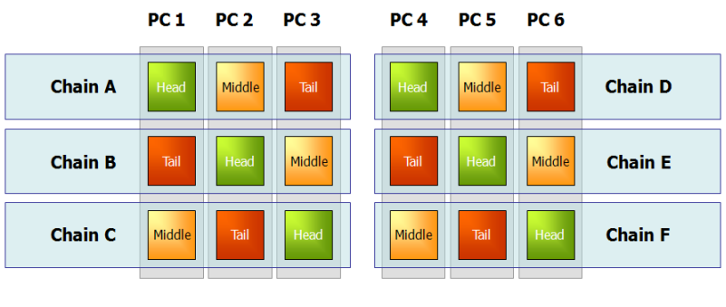

目次
Hibari®は、キー・バリュー・ストア（KVS）方式を用いた分散型データベースです。大規模化し続けるデータ、いわゆる“Big Data”に対応し、商用にすぐに活用できます。大量のデータをどのように保管するかが大きな問題となる現在、それに対処する「NOSQL」というソリューションが出てきました。Hibariはこの分野で、次のような多くの理由から注目を集めています。
- Hibariは、プログラミング言語Erlangと革新的なチェイン・レプリケーション技術を使った唯一のオープンソースのキー・バリュー型データベース（KVDB） です。Erlangは、堅牢で高性能な分散型ストレージ・ソリューションの構築には理想的なプログラミング基盤を提供します。一方、チェイン・レプリケーションは、データの一貫性を犠牲にすることなく、高いスループットと高可用性を提供します。
- Hibariは、キャリアクラスの通信事業分野で要求される厳格な基準を満たすように作られた唯一のオープンソースのキー・バリュー型データベース です。通信事業分野の製品では、数百万ユーザーの利用実績を持ちます。
Hibariは、次のような優れた特長を備えています。
- ストレージ・オプションとして、RAM+ディスクベース、あるいは、ディスクのみの使用を、テーブル単位で選択できます。
- キー単位で有効期限およびカスタムのメタデータをサポートします。
- 制限範囲内で複数キーのアトミック・トランザクションをサポートします。
- キーのタイムスタンプ機能によって「テスト・アンド・セット」型の操作が可能です。
- システムの規模に応じたデータ配置の自動バランシング機能を持ちます。
- コードのライブ・アップグレードをサポートします。
- 複数のクライアントAPIを実装しています。
この最初の章では、「Big Data」の時代が投げかける問題に対処するために近年出現した「NOSQL」ソリューションについて簡単に説明します。その後、大規模データを扱うアプリケーションの開発者や管理者、あるいはユーザーにHibariが提供する大きな利点について、さらに詳しく紹介します。
まず、NOSQLという新しい動向は、伝統的なRDBMS（リレーショナル・データベース管理システム）を無条件に否定するものではありません。この動向は、今日のデータ環境がSQLだけに留まらず（Not Only SQL：NOSQL）、ストレージに多様なツールが必要であるという認識が急速に広がっていることの表われです。リレーショナル型のデータ・ストレージとNOSQL型のデータ・ストレージは、それぞれ異なるアプローチを持ち、異なる種類のアプリケーションやサービスに適しています。これらは互いに補完するものであると理解してください。 NOSQLが注目されるようになった背景には、TB（テラバイト）あるいはPB（ぺタバイト）級のデータを保管して使うアプリケーションやサービスの急増という現状があります。その分野では頻繁に「常時使用可能」な可用性を保証し、エンドユーザーの待ち時間を減らす努力が払われてきました。たとえば次のような多くの市場分野で、さまざまな組織がBig Data時代の到来に備えて取り組んでいます。
- Webサービス：検索、eコマース、ソーシャルメディア、ユーザー作成コンテンツ等による大量データの要求への対応
- 通信事業：何百万件もの加入者のネットワークログや通話データ記録の管理と分析
- 公益事業：次世代送電網の巨大データ容量の管理と分析
- 金融サービス：リスク分析とモデル化を目的とした顧客履歴データの保管およびマイニング
- 小売分析：クリック・ストリーム分析とマイクロターゲティング
- バイオテクノロジー：ゲノム解析
これらの分野に限らず、大量データを扱う環境にあるあらゆる組織が、いまや未曽有の大規模データを保管するシステムを構築する問題に直面しています。RDBMSとハイエンドの専用ハードウェアを軸とする伝統的なデータ保管アプローチではこうしたニーズに応えられないと、多くの組織は既に気づいています。特に問題になるのは、次の点です。
- 単独のRDBMSインスタンスの「スケールアップ」は、どんなにハイエンドのシステムを用いても、また、どんなに多額の費用をかけても、必要な規模を到底達成できません。
- 複数のRDBMSインスタンスに分割する「スケールアウト」は、巨額の費用を伴ううえに、運用が大幅に複雑になり、リレーショナル・モデルの利点を大きく損ないます。
先進的な組織では、コストや複雑性にしわ寄せせずにBig Dataに適した容量を実現させようと、より良いスケーリングの方法を追求してきました。また、増加の一途をたどる使用シナリオのすべてが、RDBMSの複雑なクエリー機能や管理機能を必要とするわけではないことも、同時に明らかになってきました。アプリケーションやサービスによっては、SQL構造や厳密なACIDが必要ないものもあります。さらに環境によっては、これらの過剰機能が高価につき、柔軟性と即応性が要求される非常に厳しい市場競争の中で、サービス提供が妨げられる可能性すらあります。
つまり、近年急増しているサービスで必要とするデータは、より大規模になる一方で、構造化の必要性はより少ないのです。
そう考えると、業界を牽引するWeb企業がNOSQLの動きの最前線にいるのは不思議なことではありません。特に、Google社の BigTable論文（2006年） と、Amazon社の Dynamo論文（2007年）は、NOSQL市場に大きな影響を及ぼしました。BigTable やDynamo、あるいはその両方から構想を得たNOSQLソリューションが多数存在しており、ここ2年でいくつかのソリューションがオープンソースのコミュニティで発表されています。
NOSQLを使ったデータ・ストレージソリューションは、それぞれ細かい点では異なりますが、基本的に次のような共通点があります。
- データモデルがシンプルである。データモデルはソリューションごとに異なり、それによってNOSQLシステムは次の3種類に分類できます。 1) キー・バリュー型データストア（例：Dynamo、Hibari） 2) 列指向型データストア（例：BigTable） 3) ドキュメント指向型データストア（例：CouchDB） これらはすべて異なるものですが、伝統的なRDBMSと比較すると、データモデルがよりシンプルで高い柔軟性を持ちます。このシンプル指向は、クライアントAPIにも引き継がれています。
- 汎用型のPCを基盤とした複数ノードに分散できます。何十、何百、何千とある汎用型のPCにスケールアウトすることにより、Big Dataの容量を低廉なコストで実現できます。受信した要求の並列処理と連動するデータ分割スキームにより、必要な高性能を得られます。
- データ・オブジェクトを複数ノードでレプリケーション（複製）することにより、コンポーネントの障害発生時にも高可用性を確保できます。
NOSQLストレージ・ソリューションの歴史や長所、あるいは設計の問題等についてさらに詳しく知りたい場合は、Webで検索してください。
Hibariは、Gemini Mobile Technologies社が社内で開発したものです。Gemini Mobile Technologies社は、アジア、ヨーロッパ、アメリカで、Tier 1モバイル・オペレータ向けの大規模メッセージングおよびトランザクション・システム開発分野の先頭に立つ企業です。Gemini社が必要とするデータストアは、Tier 1通信事業分野向け製品の導入環境に必須の堅牢さに加えて、効率的で高速かつ柔軟性を備え、拡張可能なものです。ところが、当時利用できる選択肢の中には満足できるものはありませんでした。そこで2005年に、Gemini社はのちに「Hibari」となるシステムの開発に着手しました。Hibariという名称は、日本語でヒバリ（雲雀）、漢字では「クラウド（雲）の鳥」を意味します。その後、システムが成熟して製品化できるようになったのを機に、2010年7月、Gemini社はApache 2.0ライセンスの下でHibariをオープンソースのコミュニティにリリースしました。Hibariが成長を続けて完成度を高める場として最も適しているのはオープンソースのコミュニティであると、Gemini社は考えています。
ここからは、Hibariの特長について説明します。これらの特長によって、Hibariは現代のBig Dataストレージ・システムを求めるビジネスおよび開発者にとって魅力的な選択肢となっています。
Erlangは、高信頼性で高性能な分散型システムを構築するように設計された汎用プログラミング言語および実行環境です。Erlangは、まず1980年代に先進的通信事業のネットワーク・システム構築用にEricsson社によって開発され、その後1998年に、Erlang/OTP (Open Telecom Platform)としてオープンソース化されました。HibariはすべてErlangで記述されています。
Erlangは次のような幅広い長所を持ち、分散型でキー・バリュー方式のストレージ・ソリューションにとって理想的な基盤を提供します。
- 並列.Erlangのプロセスは、メッセージパッシングによる通信を行い、メモリを共有しないため、非常に軽く実行できます。スケジューリング、メモリ管理、その他並列処理に関するサービスを管理するのはErlang のVMであり、ホストのオペレーティング・システムに並列処理の要求を送ることはありません。
- 分散.Erlangは、分散環境に特化して設計されています。メッセージパッシングはTCP経由で透過的に行われるため、Erlangのプロセス同士が通信する際は、同一ノードでも違うノードでもまったく同じ方法です。シンプルかつ効率的な設計により、高性能の分散型ストレージ・システムに求められる高度な並列性と拡張性を達成しています。この優れた並列性と分散処理により、Erlangは複数ホスト上で連携しながら稼働する点を除いては、オペレーティング・システムに似た初めての “アプリケーション・システム”と言われています。
- 堅牢性.Erlangのプロセスは、互いに完全に独立しており、データを共有しません。各プロセスが個別に動作するため、プロセスが互いを監視してプロセス障害を検知した場合は、すぐに対応できます。これは、リモート・ノードにおいても可能です。
- 移植性.Erlangの VMは、Linux上だけでなく、UNIX、Windows、Macintosh、VxWorks上でもすべて同じものが稼働します。Erlangの分散プロセスは、異なるホスト・オペレーティング・システムが混在する環境でも、シームレスに相互の通信ができます。システム管理者は環境の変化に対応してホストをうまく組み合わせる必要があることを考えると、オペレーティング・システムを問わないこの移植性は、ストレージ・システムの弾力性の向上に大きく寄与します。
- ホット・コードアップグレード.HibariのようなErlang ベースのアプリケーションは、ホット・コードアップグレードをサポートしています。そのため、システムを終了せずにアップグレードを適用できます。切り替え中は旧コードと新コードが同時に稼働します。これは、エンドユーザーに「常時使用可能」な可用性を提供する必要がある環境にとって重要な利点です。
他にも、インクリメンタルなガベージ・コレクションやシングル・アサインメント変数、強固な例外処理機能などにより、Erlangは信頼性の高い分散型アプリケーションに最適なものとなっています。
分散型でキー・バリュー・ストア方式を用いたHibariは、チェイン・レプリケーション方式を実装しています。チェイン・レプリケーションとは、データの一貫性を犠牲にせず、冗長性を確保して高可用性を得るために、 van Renesse and Schneiderが最初に提案したものです。Hibariのストレージ・クラスターにおけるチェイン・レプリケーションの動作を簡単に説明すると、次のようになります。
- コンシステント・ハッシュにより、キー・スペースを複数のストレージの「チェイン」に分割します。
- 各チェインは、複数の論理ストレージである「ブリック」から構成されます。ブリックごとにそれぞれErlangのVMインスタンスが稼働します。
- 各チェイン内では、複数のブリックがそれぞれ相異なる役割を果たします。クライアントからキーとバリューのペアに対する書き込み要求が送信されると、まず「ヘッド」ブリックに書き込まれ、続いてそれが1個以上の下流の「ミドル」ブリックに自動的にレプリケーションされて、最終的に「テイル」ブリックまでレプリケーションされます。このテイル・ブリックが、クライアントの書き込み要求に対する応答を返します。一方、読み出し要求はテイル・ブリックに送信され、テイル・ブリックがクライアントに応答を返します。

多くの分散ストレージ・システムでは、レプリケーションしたデータ間に弱い一貫性、または結果整合性しか保証できないことが多く、しかも一貫性が損なわれた場合の管理をクライアント・アプリケーション（とクライアント・アプリケーションの開発者）に押し付けることがよくあります。それに対して、Hibariはチェイン・レプリケーションを実装しているため、強い一貫性を保証します。データの書き込みは、チェインをたどってテイル・ブリックまでレプリケーションされた時点で初めて完了したと見なされ、その後でクライアントに応答を返します。また、読み出し要求を処理するのはテイル・ブリックだけです。したがって、Hibariのクライアントにオブジェクトの書き込み応答が返された後は、そのオブジェクトを他のクライアントから見ると、必ず最新の状態であることが保証されます。この強い一貫性は、“結果整合性”ではエンドユーザーが期待するサービス・レベルを満たせない環境、あるいは、システム設計者が、データの不整合を管理するために必要なロジックをクライアント・アプリケーションの中にばらまきたくないと望む環境では、貴重なものです。
チェインの「長さ」は、必要とするレプリケーションの程度と冗長性のレベルによって変更できます。たとえばチェインの長さを4とすると、ヘッド・ブリック1個に、ミドル・ブリック2個、テイル・ブリック1個となります。また3ブリック・チェインとすると、ヘッド・ブリック1個、ミドル・ブリック1個、テイル・ブリック1個です。長さ2のチェイン（ヘッド・ブリックとテイル・ブリックが1個でミドル・ブリックなし）で稼働させることも、あるいは長さ1にすることもできます（1個のブリックがヘッドの役割とテイルの役割の両方を果たします）。
どんな長さのチェインでも稼働させることができます。また、システムがチェイン内の障害を検知した場合は、その後のメンバー・ブリックの役割を調整することもできます。これによってHibariは強い一貫性とともに、高可用性を提供できるのです。たとえば3ブリック・チェインのヘッド・ブリックに障害が発生すると、自動的にミドル・ブリックがヘッド・ブリックの役割を引き継ぐため、チェインは正常に機能し続けます。
 さらに、新しいヘッド・ブリックに障害が発生した場合でも、残る1個のブリックがヘッドの役割とテイルの役割の両方を果たし、あたかも単独ブリック「チェイン」のように機能して、すべての書き込みおよび読み出し要求を処理します。
さらに、新しいヘッド・ブリックに障害が発生した場合でも、残る1個のブリックがヘッドの役割とテイルの役割の両方を果たし、あたかも単独ブリック「チェイン」のように機能して、すべての書き込みおよび読み出し要求を処理します。
複数の論理ブリックを単一の物理ノードで稼働させることもできますが、高可用性を得るためには、特定のチェインのメンバー・ブリックを別々のマシン上に配置することが望ましいのは当然です。もし各マシン上で複数のブリックを稼働させたいと望み、なおかつ各チェインの高可用性を保証したいなら、チェインをマシン間で「ストライプ」構造に配置する選択肢も魅力的です。
 書き込み要求を受けるヘッド・ブリックと、書き込み要求に応答して読み出し要求を処理するテイル・ブリックには、ミドル・ブリックより多くの負荷がかかることに注意してください。上図に示すように、異なる役割のブリックを均等に割り振ることも、マシン間の負荷分散の一助となります。
物理ノードに障害が発生した場合は、影響を受ける各チェイン内のブリックが自動的に役割を変更して、各チェインはクライアントに対して正常にサービスを続行します。

Hibariのストレージ・システムにおけるチェイン・レプリケーション、フェイル・オーバー、および修復に関する詳しい情報について、さらにHibariのAdminサーバーと呼ぶ冗長構成クラスター・メンバー・アプリケーションに関する情報については、「Hibari®システム管理者ガイド」の以下の節を参照してください。
Hibariは次に示すように、クラスターの増加に伴うコストと運用上の複雑性を最小限に抑えながらBig Dataに拡張性を提供します。
- Hibariは、物理ノードを追加して、そこに追加チェインを配置することによって、水平に拡張できます。Hibariのクラスターにマシンを追加するごとに、クラスターのストレージ容量の合計と処理性能は線形に増加します。
- クラスターにチェインを追加（または削減）する場合、システムは中断時間なしでストレージの自動データ配置バランシングを行うため、サービスを中断せずにHibariのストレージ・クラスターを拡大（または縮小）できます。
- Hibariは、汎用のPC上で稼働します。またシステムは、異なるハードウェア・リソースに容易に対応できます。ストレージ・クラスター内のブリックは、異なる容量のRAMやディスクを使用でき、CPUのさまざまな処理速度にも対応できます。異なるハードウェアを組み合わせてクラスターを構成する場合、Hibariのコンシステント・ハッシュ機能をチューニングしてクラスターの使用状況を最適化することも可能です。各チェインに重み付けファクターを指定して、キー・スペース全体に占めるチェインの割り当てを、他のチェインに比べて増加または減少させることもできます。
Hibariは、異種のハードウェアの混在をサポートするだけでなく、Erlangをベースとしているため、ほとんどすべてのオペレーティング・システム上で稼働します。異種のハードウェアおよびオペレーティング・システムに容易に対応できるので、利用できるあらゆるリソースを用いてHibariをインクリメンタルに拡張できます。すべてのリソースを同時に、また同一の種類に揃えて購入する必要はありません。
Hibariの水平拡張の上限値は、明確には決まっていませんが、Erlangに組み込まれたネットワーク分散機能の実装の限界から見て、200〜250ノードが実質的な限界になります。また、Hibariのチェインは、理論的には複数のデータ・センターをまたがって延長しで地理的な冗長性を確保することも可能ですが、現在のところ、単一のデータ・センター内の配置しかテストしておらず、稼働実績はありません。 |
Hibariのクラスター・サイズの変更に関する詳細情報は、「Hibari®システム管理者ガイド」の 動的なクラスター構成変更の節を参照してください。
Hibariのストレージ・クラスターでは、Big Dataの環境においても高性能を発揮できるよう、複数の機能が連携して働きます。
- Hibariを支えるErlang技術は、分散並行処理に特化して設計されており、分散並行処理環境で優れた実力を発揮します。
- Hibariに実装されているコンシステント・ハッシュとチェイン・レプリケーションは、複数のチェインが分割されたキー・スペースをまたがって使用することによって、個々のチェインが受ける要求を同時に並行処理できます。チェイン間のデータの配置をチューニングして、異種のハードウェア・リソースの使用状況を最適化することも可能です。
- Hibariのチェイン・レプリケーションは、ストレージ・ブリックに、ヘッド、ミドル、テイルという役割の異なる処理を割り当てることによって性能を上げています。この役割分担により、特に読み出し時の性能が向上します。読み出し要求を処理するのはテイル・ブリックで、このブリックは書き込み要求に対する最初の処理の負荷を担っていないからです（この処理はヘッド・ブリックが行います）。
- Hibariは、多数のテーブル単位の性能チューニングのオプションをサポートしています。たとえば分散型KVDBは、バリューBLOBを保持するストレージとして、ディスクベースか、RAMベースか、どちらか一方をサポートするものしかありません。それに対してHibariは、RAM＋ディスクベース、あるいは、ディスクのみかを、アプリケーションのニーズに応じてテーブル単位で選択できます。どちらのストレージ・オプションを選んでも、データ変更のログはすべてディスクに保持されるので、電源障害発生時にもデータ復旧が可能です。ディスクI/Oは、バッチ・コミット技術を使用して最小化しています。
Hibariは、こうした機能を活用することにより、現在の主流であるオープンソースのNOSQLストレージ・システムに匹敵する拡張可能な高性能を提供しています。それと同時に、多くのシステムに欠けているデータの信頼性と強い一貫性を提供します。Hibariの性能を他のNOSQLシステムと比較すると、特に読み出しと、大きいサイズ（200KB超）のバリューの処理の点で優れています。大きいサイズのバリューに対しても一貫性を確保できるHibariの高い性能は、小さいサイズのバリューの処理に適応したソリューションとは一線を画すものです。
いかに高性能か、その実例を紹介します。数百万ユーザーが利用するWebメール・システムで、Hibariが処理したトランザクションは秒あたり2,200件、その際の読み出しの平均待ち時間は1〜20ミリ秒、書き込みの平均待ち時間は20〜80ミリ秒という実績を残しています。
Hibariの中核をなすデータモデルとクライアントAPIは、キー・バリュー・ストア方式としてシンプルな設計がなされています。BLOBベースのキーとバリューのペアが、辞書のようにソートされたテーブルに対して、追加、検索、削除を行います。Hibariは、キー・バリュー・ストア方式に伴う柔軟性と拡張性を提供していますが、それと同時に、クライアント・アプリケーションと開発者のパワーを増強する次のような大きな特長を備えています。
- オプションとして、クライアントがオブジェクト単位に有効期限を設定できます。
- オプションとして、クライアントがオブジェクト単位にカスタム・フラグを設定できます。この柔軟性を備えたカスタム・メタデータの更新は、関連するバリューBLOBの更新の有無によらずに可能であり、検索もバリューBLOBの有無によらず可能です。
- オブジェクトの更新のつど、自動的にタイムスタンプを取得します。このタイムスタンプの仕組みにより、「テスト・アンド・セット」型の命令の実行が可能になります。つまりクライアントは、対象のキーのタイムスタンプが期待したものである場合にのみ、要求した命令を実行するように指定できます。
- HibariのクライアントAPIは、キーの制限範囲内で（具体的にはチェイン全体ではなく特定のチェイン内で）、アトミック・トランザクションをサポートします。この「マイクロ・トランザクション」のサポートは、他のオープンソースのKVDBにはないHibariの特長であり、これによって堅牢なクライアント・アプリケーションの作成がずっと簡単になります。
Hibariは、複数のクライアントAPIの実装をサポートしています。たとえば、次のようなものがあります。
- ネイティブErlang
- ユニバーサル・バイナリ・フォーマット（UBF）
- Thrift
- Amazon S3
- JSON-RPC
Hibariのクライアント・アプリケーションは、Java、 C/C++、Python、Ruby、Erlangなど幅広い言語で開発できます。
HibariのクライアントAPIに関する詳細情報は、Client API: Native Erlangおよび当ガイドでこのあと説明するクライアントAPIの章を参照してください。
当初、Hibariを開発したのは、主にTier 1通信事業分野におけるデータ保管の要望に応えるためでした。ところがシステムが進化すると、アジアのある大手キャリアから、GB（ギガバイト）級のWebメール・サービスを開始したいという要望が寄せられました。Hibariに対するこの顧客の要求は、次のように厳しいものでした。
- 開始時点で数百万ユーザー
- 開始から数ヶ月で、保管するメッセージは数十億件
- ストレージ容量は数百TB（テラバイト）
- 継続的な成長を支える柔軟性
- システムの低廉なコスト（サービスが「フリーミアム」モデルを採用するため）
- 個々のメッセージのサイズは、添付情報を含めて数バイトから数MB（メガバイト）
- オブジェクト単位のメタデータ要求のサポート
- 対話型セッションの強い一貫性
- データの信頼性（メッセージやメタデータの損失は許されない）
- 高可用性（「常時使用可能」を第一とするサービス）
- 短い待ち時間（エンドユーザー・トランザクションで1秒未満の応答時間）
私たちは、この厳しい要求を満たすようにHibariを構築し、広範囲なテストと試行を通じて鍛え上げ、2010年初頭に、この大規模Webメール・システムのサポートを開始しました。現在このシステムは、数百万人のエンドユーザーの数十億件のメッセージを保管し、可用性、待ち時間、一貫性、信頼性、低価格という顧客の要求に応えています。
この間に、Hibariの開発と、GB級Webメール・サービス向けの細かいチューニングと並行して、アジアの大手キャリア2社のモバイル・ソーシャル・ネットワーク・サービス向けのストレージ・ソリューションとしても導入されました。この環境で、Hibariは多様な種類とサイズのデジタルデータとともにユーザー・プロファイル・データを保管しています。
Hibariは、アプリケーション開発者に対して、次のように大きな利点を提供します。これは、分散型キー・バリュー・ストア方式ではめったに得られない利点です。
- データの強い一貫性を保証することにより、一貫性が損なわれた場合の管理の重荷をクライアント・アプリケーションから取り除きます。
- マイクロ・トランザクションをサポートすることにより、強固なアプリケーションの作成をより簡単にします。
- オブジェクト単位のカスタム・フラグをサポートすることにより、柔軟性の高いサービスに特化したアプリケーション設計を助けます。
- 多様なクライアントAPIを実装し、多様な開発言語をサポートします。
一方、Hibariがシステム管理者に提供する大きな利点として、次のような運用の自動化があります。これにより、変化の激しいストレージ環境におけるデータ管理が、より簡単になります。
- 自動レプリケーション
- ノード障害発生時の自動フェイル・オーバー
- 障害ノードが復旧する場合の自動修復
- クラスターの拡張または縮小時の自動データ配置バランシング
そしてHibariはビジネス全体に対しても、サービスの高可用性と短い待ち時間に対するユーザーの要求を満たしながら、低廉なコストでBig Dataの拡張性を提供します。Hibariは、大量のデータを扱う幅広いサービスシナリオに対応できるストレージ・ソリューションです。そのシナリオは、大規模メッセージングやソーシャルメディア、アーカイブなどをはじめ、さまざまな可能性を持ちます。Hibariは、多種多様なオブジェクトすべてに対してデータの強い一貫性と高性能が求められる環境で、その真価を発揮します。
この章では、Hibariを起動して稼働させる上で必要な以下のトピックを説明します。
HibariはErlangの VMをサポートするUNIXとUNIX系、およびWindows、Mac OS Xなどのオペレーティング・システム（以下、OS）上で稼働します。詳しくは、Erlangの公式サイト Implementation and Ports of Erlang を参照してください。 また、稼働環境に必要なハードウェア要件については、「Hibariシステム管理者ガイド」の ブリックのハードウェアに関する注意を参照してください。
Hibariに必要なサードパーティのソフトウェアは、シングルノードのインストールか、マルチノードのインストールかによって、異なります。
Hibariをシングルノードにインストールする場合は、以下のソフトウェアが必要です。
OpenSSL - http://www.openssl.org/
- Erlangの “crypto” モジュールに必要
Hibariをマルチノードにインストールする際にインストーラーツールを使用すると、クラスターのセットアッププロセスを簡略化できます。最初にHibariをインストールするホストさえ決めれば、あとはこのツールが管理して、Hibariをホストにインストールします。このツールは、Hibariのノードのマシンからでも、その他のマシンからでも起動できます。「インストールノード」（インストールツールを稼働させるマシン）とHibariノード（Hibariをインストールして稼働させるマシン）では、必要となるサードパーティのソフトウェアが異なります。
インストールノードに必要なソフトウェアは以下のとおりです。必要に応じて、リンク先のインストールガイドに従ってダウンロードしてください。
- Bash - http://www.gnu.org/software/bash/
- Expect - http://www.nist.gov/el/msid/expect.cfm
- Perl - http://www.perl.org/
- SSH (client) - http://www.openssh.com/
Git - http://git-scm.com/
- バージョン1.5.4以降を使用してください。
Git用の電子メールアドレスと名前を設定していない場合は、以下のように設定してください。
$ git config --global user.email "you@example.com" $ git config --global user.name "Your Name"
- GitHubアカウントを取得していない場合は、ここで取得してください。 - https://github.com/
現在、Bash、Expect、Perl、SSHにはバージョン指定はありません。
Hibariをインストールするノード群に必要なソフトウェアは以下のとおりです。
- SSH (server) - http://www.openssh.com/
OpenSSL - http://www.openssl.org/
- Erlangの“crypto”モジュールに必要
現在、Hibariはビルド済みで提供することができません。当面は、ソースコードからHibariをビルドしてください。第7章の TODO(「7. ソースコードからHibariをビルドする」) の説明に従ってビルドして、その後、本節に戻ってセットアップを行ってください。
Hibariをビルドすると、後でセットアップに使用する2つのファイルが出力されます。 - tarballパッケージ“hibari-X.Y.Z-DIST-ARCH-WORDSIZE.tgz” - md5sumファイル“hibari-X.Y.Z-DIST-ARCH-WORDSIZE-md5sum.txt”
_X.Y.Z_はリリースバージョン、_DIST_はリリースのディストリビューション、_ARCH_はリリースのアーキテクチャ、_WORDSIZE_はリリースのワードサイズです。
シングルノードにHibariをインストールしたシステムには、マルチノードのHibariクラスターが提供するようなデータのレプリケーションや冗長性はありません。しかし、テストや開発上の目的で簡単にHibariをシングルノードにインストールして配置したいときは、この方法を利用します。
Hibariを稼働させるディレクトリを作成します。
$ mkdir running-directory
Hibariをソースコードからビルドする際に出力されたtarballパッケージを解凍します。
$ tar -C running-directory -xvf hibari-X.Y.Z-DIST-ARCH-WORDSIZE.tgz
Hibariノードでは、システムの |
Hibariを起動します。
$ running-directory/hibari/bin/hibari start
Hibariを初めて起動する場合は、システムのブートストラップを実行します。
$ running-directory/hibari/bin/hibari-admin bootstrap
Hibariのブートストラッププロセスでは、まずシングルノードのAdminサーバーを起動した後、Hibariのデフォルトテーブルとして機能する１つのテーブル「tab1」を作成します。追加テーブルの作成に関する詳細は、 新しいテーブルの作成を参照してください。
シングルノードのHibariシステムの稼働状況を検証するには、以下のようにクイックチェックを実行してください。
“Hibari Web Administration”ページがオープンできることを確認します。
$ your-favorite-browser http://127.0.0.1:23080
Hibariノードにpingが打てることを確認します。
$ running-directory/hibari/bin/hibari ping
シングルノードのHibariシステムは、ローカルホストアドレス127.0.0.1のみに応答するようにハードコーディングされています。したがって、Hibari ノードにはそのノード自身からしか到達できません。 |
ターゲットノードにHibariをインストールする前に、以下の準備を実行してください。
- インストールノードおよびターゲットのHibariノード群に、必要なユーザー権限を設定してください。
- クラスター用のインストーラーツールをダウンロードしてください。
- クラスター用のインストーラーツールを設定してください。
インストール時に使用するシステムのユーザーIDは、Hibariの実行時のユーザーIDとは異なるものでなければなりません。インストールを実行するユーザーアカウント ($USER) は、以下のようにセットアップします。
- $USERは、インストールノードにも、ターゲットHibariノード群にも必要です。
- $USERは、インストールノードにおいてSSHの公開鍵と秘密鍵を持つ必要があります。パスワード認証なしにSSHでログインできるようにSSH agentを設定してください。
- $USERアカウントは、ターゲットのHibariノードでも、パスワード認証なしにSSHでログインできなければなりません。
- $USERアカウントは、ターゲットのHibariノード上で、パスワード認証なしにsudoコマンドでアクセスできなければなりません。
インストールを実行するユーザーのアカウントに上記の権限がない場合は、以下のステップを実行してください。
rootユーザーとして、インストールノードにインストールユーザー ($USER) を追加します。その後、各Hibariノードにインストールユーザーを追加して、そのユーザーにパスワード認証なしのsudo権限を付与します。
$ useradd $USER $ passwd $USER $ visudo # append the following line and save it $USER ALL=(ALL) NOPASSWD: ALL
![[注記]](images/icons/note.png)
sudoのテスト中に“sudo: sorry, you must have a tty to run sudo”というエラーメッセージが出た場合は、
/etc/sudoersファイル内の次の行をコメントアウトしてください。$ visudo Defaults requiretty
インストールノードに、インストールユーザー用のSSHの公開鍵と秘密鍵を新たに作成します。
$ ssh-keygen # enter your password for the private key $ eval `ssh-agent` $ ssh-add ~/.ssh/id_rsa # re-enter your password for the private key
各Hibariノードにおいて
-
\~/.ssh/known_hostsファイルに、インストールノードのエントリーを追加します。 ~/.ssh/authorized_keysファイルに、SSHの公開鍵のエントリーを追加します。以下の例では、dev1、dev2、dev3がターゲットのHibariノード群です。
$ ssh-copy-id -i ~/.ssh/id_rsa.pub $USER@dev1 $ ssh-copy-id -i ~/.ssh/id_rsa.pub $USER@dev2 $ ssh-copy-id -i ~/.ssh/id_rsa.pub $USER@dev3
インストールノードがHibariのクラスターノードの１つである場合は、インストールノードにもssh-copy-idを実行する必要があります。
-
各Hibariノードへのパスワード認証のないSSHのアクセスが、期待どおりに行われることを確認します。
$ ssh $USER@dev1 $ ssh $USER@dev2 $ ssh $USER@dev3
SSHのセットアップの詳細について知りたい場合は、 ( http://inside.mines.edu/~gmurray/HowTo/sshNotes.html )を参照してください。 |
“Cluster”とは、Hibariのノード群のクラスターのインストールと設定、およびブートストラップに使用する簡単なツールです。このツールはHibariパッケージの一部ではありませんが、GitHubから入手できます。
Clusterは、多くのユーザーのニーズを満たすツールです。ただし現在、このツールの「ターゲットノード」のレシピはLinux主体に書かれています（たとえばuseraddや userdelなど）。その他のOSやプラットフォーム向けのパッチ類の提供が望まれます。Linux以外の配置の場合のClusterツールは比較的単純で、ツールのレシピどおりに操作すれば手動でインストールできます。 |
Clusterツールをダウンロードするための作業用ディレクトリを作成します。
$ mkdir working-directory
GitHubからClusterツールのGitリポジトリをダウンロードします。
$ cd working-directory $ git clone git://github.com/hibari/clus.git
このダウンロードにより、
clusというサブディレクトリが作成され、その下に、インストーラーツールと種々のサポートファイルが格納されます。
Clusterツールには、Hibariのクラスターのセットアップ方法を示す基本的な設定情報が必要です。必要な設定を明記した簡単なテキストファイルを作り、Clusterツールを稼働させる際に、そのファイルをインプットとして使ってください。
設定情報ファイルは、Clusterツールをダウンロードした作業用ディレクトリ内に作成するのが最も簡単です。ファイル名は何でもかまいません。ここでは説明のために hibari.config というファイル名を使用します。
以下は hibari.config ファイルのサンプルです。作成するファイルには、ここに示したすべてのパラメータを記載する必要があります。またその値は、この例と同じ書式（括弧や引用符も）でなければなりません。パラメータの記述はサンプルに従ってください。
ADMIN_NODES=(dev1 dev2 dev3)
BRICK_NODES=(dev1 dev2 dev3)
BRICKS_PER_CHAIN=2
ALL_NODES=(dev1 dev2 dev3)
ALL_NETA_ADDRS=("10.181.165.230" "10.181.165.231" "10.181.165.232")
ALL_NETB_ADDRS=("10.181.165.230" "10.181.165.231" "10.181.165.232")
ALL_NETA_BCAST="10.181.165.255"
ALL_NETB_BCAST="10.181.165.255"
ALL_NETA_TIEBREAKER="10.181.165.1"
ALL_HEART_UDP_PORT="63099"
ALL_HEART_XMIT_UDP_PORT="63100"ADMIN_NODES- Hibari Adminサーバーを起動できるノード群のホスト名。Adminサーバーに関する詳細は、「Hibariシステム管理者ガイド」の Adminサーバーアプリケーションを参照してください。
BRICK_NODES- Hibariのストレージ・ブリックとして機能するノード群のホスト名。上記設定ファイルのサンプルには3つのストレージ・ブリックのノード（dev1、dev2、dev3）があり、この3つのノードのそれぞれでAdminサーバーを稼働できます。
BRICKS_PER_CHAIN- チェイン・レプリケーションごとのブリック数。たとえば、1チェインあたり2ブリックであれば、チェインに格納されるデータには2つのコピーが存在します（ブリックごとに1コピー）。1チェインあたり3ブリックであれば、3つのコピーが存在します。チェイン・レプリケーションの概要は、本ドキュメントの「1.2.2 チェイン・レプリケーションによる高可用性と強い一貫性」を参照してください。チェイン・レプリケーションの詳細は、Hibariシステム管理者ガイドを参照してください。
ALL_NODES-
ADMIN_NODESとBRICK_NODESの和集合によって得られるHibariの全ノードのリスト。
-
ALL_NETA_ADDRS-
「Hibariシステム管理者ガイド」の
パーティション化検出アプリケーションに記述されているように、マルチノードのHibariのクラスター内の各ノードは、2つのネットワーク（ネットワークAおよびネットワークB）に接続されていなければなりません。これは、ネットワークのパーティションを検出および管理するためです。
ALL_NETA_ADDRSパラメータで、ネットワークA内の各HibariノードのIPアドレスを指定します。このネットワークAを介して、データ・レプリケーションおよびその他のErlangの通信が行われます。IPアドレスの一覧は、ALL_NODESで指定したホスト名に対応している必要があります。
-
「Hibariシステム管理者ガイド」の
パーティション化検出アプリケーションに記述されているように、マルチノードのHibariのクラスター内の各ノードは、2つのネットワーク（ネットワークAおよびネットワークB）に接続されていなければなりません。これは、ネットワークのパーティションを検出および管理するためです。
ALL_NETB_ADDRS- ネットワークB内におけるHibariの各ノードのIP アドレス。ネットワークBは、ネットワークパーティションの検出に役立つハートビートブロードキャストのためだけに使用されます。IPアドレスの一覧の順番は、ALL_NODESで設定したホスト名の順番に対応している必要があります。
ALL_NETA_BCAST- ネットワークAのIP ブロードキャストアドレス。
ALL_NETB_BCAST- ネットワークBのIP ブロードキャストアドレス。
ALL_NETA_TIEBREAKER- ネットワークAでパーティション問題が発生した場合に、「タイブレーカ」として使用するネットワーク監視アプリケーション用のIPアドレス。Hibariノードにおいて、ネットワークAにパーティションが発生し、ネットワークBにはパーティションが発生していないとネットワーク監視アプリケーションが判断した場合、ネットワークAのタイブレーカのIPアドレスがpingに応答すれば、ローカルノードはパーティションの「正しい」側に存在することになります。タイブレーカは、Erlangのすべてのネットワーク通信が配信されるレイヤ2のスイッチまたはレイヤ3のルータのアドレスであることが望まれます。
ALL_HEART_UDP_PORT- ハートビート・リスナー用のUDPポート。
ALL_HEART_XMIT_UDP_PORT- ハートビート・トランスミッター用のUDPポート。
ネットワーク監視の設定に関する詳細は、パーティション検出のOTPアプリケーションのソースファイル (https://github.com/hibari/partition-detector/raw/master/src/partition_detector.app.src) を参照してください。
稼働時の設定では、ネットワークAとネットワークBを、物理的に異なるネットワークおよびネットワークインターフェイスにするべきです。しかし、テストおよび開発時には、ネットワークAとネットワークBを物理的に同じネットワークにすることができます（設定ファイルの上記サンプルと同様）。 |
最終ステップとして、 各Hibariノード で
/etc/hostsファイルに、クラスター内のすべてのHibariノード群のエントリーがあることを確認します。10.181.165.230 dev1.your-domain.com dev1 10.181.165.231 dev2.your-domain.com dev2 10.181.165.232 dev3.your-domain.com dev3
-
システムの
/etc/sysctl.confファイルにvm.swappiness=0を設定してください。Erlangの VMにおいてswappinessを指定することは望ましくありません。
インストールノードからインストールユーザーとしてログインし、以下の手順でHibariクラスターを作成します。
Clusterツールのダウンロードおよび クラスター設定情報ファイルの作成を行った作業ディレクトリに、Hibariのtarballパッケージとmd5sumファイルがあることを確認します。
$ cd working-directory $ ls -1 clus hibari-X.Y.Z-DIST-ARCH-WORDSIZE-md5sum.txt hibari-X.Y.Z-DIST-ARCH-WORDSIZE.tgz hibari.config $
Hibariのすべてのノードに、”hibari”というユーザーを作成します。
$ for i in dev1 dev2 dev3 ; do ./clus/priv/clus.sh -f init hibari $i ; done hibari@dev1 hibari@dev2 hibari@dev3
“hibari”ユーザーがすでにそのノードに存在する場合は、-fオプションが“hibari”ユーザーを強制的に削除して、再度作成します。
新たに作成した「hibari」ユーザーを通して、HibariのすべてのノードにHibariパッケージをインストールします。
$ ./clus/priv/clus-hibari.sh -f init hibari hibari.config hibari-X.Y.Z-DIST-ARCH-WORDSIZE.tgz hibari@dev1 hibari@dev2 hibari@dev3
デフォルト設定では、Clusterツールはターゲットノード群の |
マルチノードのHibariクラスターの起動および停止は、インストールプロセスを管理したノードから、Clusterツールを使って行います。本節で説明するHibariの各コマンドは、インストール手続き中に作成した Clusterツール設定情報ファイルのファイル名を参照することに注意してください。
Clusterツールをダウンロードした作業用ディレクトリに移り、“hibari”ユーザーによって、HibariのすべてのノードでHibariを起動します。
$ cd working-directory $ ./clus/priv/clus-hibari.sh -f start hibari hibari.config hibari@dev1 hibari@dev2 hibari@dev3
Hibariを初めて起動する場合は、“hibari”ユーザーを通じて、システムのブートストラップを実行します。
$ ./clus/priv/clus-hibari.sh -f bootstrap hibari hibari.config hibari@dev1 => hibari@dev1 hibari@dev2 hibari@dev3
Hibariのブートストラッププロセスが、最初の 適格なadminノードで、HibariのAdminサーバーを起動し、Hibariのデフォルトテーブルとして機能する１つのテーブル「tab1」を作成します。追加テーブルの作成に関する詳細は、新しいテーブルを作成するを参照してください。
ブートストラップで“another_admin_server_running”というエラーが出た場合は、そのネットワークで稼働中の他のHibariのクラスターを停止してください。あるいは他のHibariクラスターや他のアプリケーションで使われていない HibariハートビートリスナーポートをClusterツールに割り当てるように設定変更し、その後で、クラスターのインストール手続きを繰り返してください。
Hibariが立ち上がって稼働していることを検証するため、以下の簡単なチェックを行ってください。
“Hibari Web Administration”ページをオープンできるかどうか確認します。
$ your-favorite-browser http://dev1:23080
各Hibariノードにpingが打てることを確認します。
$ ./clus/priv/clus-hibari.sh -f ping hibari hibari.config hibari@dev1 ... pong hibari@dev2 ... pong hibari@dev3 ... pong
新しいテーブルは、AdminサーバーのGUIを通して作成するのが最も簡単です。“http://localhost:23080/” を開き、“Add a table” をクリックしてください。GUIに加えて、hibari-admin ツールで新しいテーブルを作成することも可能です。詳しい使用法は、hibari-admin ツールの説明を参照してください。
管理用のAPIを使ったテーブル作成の方法については、「Hibariシステム管理者ガイド」を参照してください。 |
GUIを使ってテーブルを追加する場合、以下のようなテーブル設定のオプションがあります。
Local- Boolean型。真の場合、新しいテーブルのデータを保存するブリックは、ローカルノード（Adminサーバーが稼働しているノード）に作成されます。偽の場合、「NodeList」フィールドを使って新たなブリックを作成するクラスターノードを指定します。
BigData- Boolean型。真の場合、バリューBLOBはディスク上に保存されます。
DiskLogging- Boolean型。真の場合、すべての更新は、永続性を実現するため、先行書き込みログに記述されます。偽の場合、ブリックは高速処理されますが、クラスターにまたがる電力障害が発生した場合、データ損失にかかる費用負担が大きくなります。
SyncWrites- Boolean型。真の場合、先行書き込みログへの書き込みは、システムコールfsync(2)を通じて安定記憶装置へ送られます。偽の場合、ブリックは高速処理されますが、クラスターにまたがる電力障害が発生した場合、データ損失にかかる費用負担が大きくなります。
VarPrefixBoolean型。真の場合、キーの可変長プレフィックス（接頭辞）が、コンシステント・ハッシュ関数へのインプットとして使われます。偽の場合は、キー全体が使われます。
可変長または固定長のプレフィックスを対象にしたハッシュ・スキームは、多くのアプリケーションにとってメリットがあります。一例として、さまざまなユーザーの状態を保持するアプリケーションを考えてみましょう。アプリケーションは、マイクロ・トランザクションを使用して、そのユーザーに関連する（同一テーブルの）さまざまなキーを更新できると都合が良いでしょう。テーブルを作成することで、VarPrefix=trueをVarPrefixSeparator=47(ASCII 47は「/」) およびVarPrefixNumSeparator=2と共に使用し、キー/FooUser/summaryと/FooUser/thing1と/FooUser/thing9が同じチェインに保存されることを保証するハッシュ・スキームを作成できます。
テーブルを作成するHTTPインターフェイスは、固定長のプレフィックススキームを公開していません。この場合、Erlangの APIを使用しなければなりません。
VarPrefixSeparator- Integer型。可変長のプレフィックス計算で使われる文字コードを定義します。デフォルト値のASCII 47 (文字「/」)やその他の文字は、UNIX/POSIX形式のファイルやディレクトリを意味するものではないことに注意してください。
VarPrefixNumSeparators- Integer型。コンシステント・ハッシュで使われるVarPrefixSeparatorのバイト数、およびその間のすべてのバイトを定義します。たとえば/foo/bar/bazというキーについて、VarPrefixSeparator=47、VarPrefixNumSeparators=3であれば、コンシステント・ハッシュで使われるプレフィックスは/foo/bar/となります。
Bricks- Integer型。Local=true（上記を参照）の場合、この整数は、ローカルノードに作成される論理ブリックの総数を定義します。Local=falseの場合、この値は無視されます。
BPCInteger型。チェインごとのブリック数を定義します。
チェインを作成するアルゴリズム → ブリック・マッピングは「ストライピング」の原則に基づいています。ブリックは十分な長さのチェインにストライプ状に置かれ、その結果、ヘッド、ミドル、テイルの役割をする同数の論理ブリックを持つことになります。「Hibariシステム管理者ガイド」の、 3ノードでストライプ構造を持つ3チェインの例を参照してください。
Erlang のAPIは、他のチェイン・レイアウトパターンで、テーブルの作成に使用されます。
NodeList-
カンマ区切りの文字列。Local=falseの場合、新しいテーブルのために論理ブリックを稼働させるノードの一覧を指定します。カンマ区切りの一覧は、
NodeName@HostNameの形式で表記されます。たとえば、3ノードの指定には、hibari1@machine-a、 hibari1@machine-b、 hibari1@machine-cを使用します。
-
カンマ区切りの文字列。Local=falseの場合、新しいテーブルのために論理ブリックを稼働させるノードの一覧を指定します。カンマ区切りの一覧は、
NumNodesPerBlockInteger型。Local=falseの場合、この整数がデフォルトのチェイン・ストライピング・アルゴリズムのストライピングの振る舞いに影響します。この値はゼロ（パラメータが無視されます）または複数のBPCパラメータです。
たとえば、NodeListにA、B、C、D、E、Fというノードがあれば、以下のストライピングパターンが使用されます。
- NumNodesPerBlock=0の場合、6チェインが6ノードにわたってストライプします。
- NumNodesPerBlock=2かつBPC=2の場合、2チェインがノードA と B、2チェインがノードC と D、2チェインがノードEと Fにわたってストライプします。
- NumNodesPerBlock=3かつBPC=3の場合、3チェインがノード A と Bと C、3チェインがノードD と Eと Fにわたってストライプします。
BlockMultFactorInteger型。Local=falseの場合、この整数がデフォルトのチェイン・ストライピング・アルゴリズムのストライピングの振る舞いに影響します。この値はゼロ（パラメータが無視されます）またはゼロ以上にしなければなりません。
たとえば、NodeListにA、B、C、D、E、Fというノードがあれば、以下のストライピングパターンが使用されます。
- NumNodesPerBlock=0かつBlockMultFactor=0の場合、6チェインが6ノードにわたってストライプします。
- NumNodesPerBlock=2かつBlockMultFactor=5かつBPC=2の場合、トータル30チェインについて、2×5=10チェインがノードA と Bに、2×5=10チェインがノードC と Dに、2×5=10チェインがノードE とFにわたってストライプします。
- NumNodesPerBlock=3かつBlockMultFactor=4かつBPC=3の場合、トータル24チェインについて、3×4=12チェインがノードA と Bと Cに、3×4=12チェインがノードD と Eと Fにわたってストライプします。
キー・バリュー型データベースとしてHibariが提供するクライアントAPIは非常にシンプルです。APIによって、データの追加、検索、削除という基本的な操作ができます。制限はありますが、その範囲内で操作を組み合わせればアトミック・トランザクションも実行できます。
HibariのクライアントAPIで実行できる操作は、次のとおりです。ネイティブErlangのAPIの各操作の詳細に関しては、リンク先を参照してください。
データの追加
まだ存在していないキーとバリューのペアを新たに追加します。オプションでフラグを追加できます。
既に存在しているキーに対して、新しいバリューやフラグを割り当てます。
キーの存在の有無にかかわらず、キーとバリューのペアと、オプションでフラグを設定します。
データの検索
キーを検索します。オプションで、そのキーに関連付けられたバリューとフラグを検索します。
辞書の順に並んで連続している複数のキーを検索します。オプションで、そのキーに関連付けられたバリューとフラグを検索します。
データの削除
キーとバリューのペア、およびそれに関連付けられたフラグを削除します。
複合操作
指定した操作のリストを実行します。オプションで、アトミック・トランザクションとして実行します。
フォールド操作
テーブル内のすべてのキーに対して、フォールド操作を実行します。
指定したプレフィックスで始まるすべてのキーに対して、フォールド操作を実行します。
クライアント側の必要に応じて、データの追加、検索、削除に「テスト・アンド・セット」ロジックを適用すると、指定したキーのタイムスタンプと一致する場合にのみ操作を実行させることができます。
この章で参照するErlangの基本データ型について、簡単に紹介します。これは、 Erlangのデータ型に関する公式ドキュメントからの抜粋を少し変更したものです。詳細な情報は、Erlangの公式ドキュメントを参照してください。
すべてのErlangのコマンドは、最後にピリオド（’.’）をつけてください。 |
- 項（term）
- すべてのデータ型のデータを 項(term) と呼びます。
- 数値（number）
- 数値定数には、 Integer(整数)型 と Float(浮動小数点)型 の2種類があります。
- アトム（atom）
アトム（atom）はリテラル（名前を持つ定数）です。英小文字以外で始まるアトム、および英数字と下線（’_’）と’@’以外を含むアトム場合は、次の例のように一重引用符（’）で囲んでください。
hello phone_number 'Monday' 'phone number' 'hello' 'phone_number'
- Bit string（ビット列）とBinary（バイナリ）
Bit string(ビット列) は、型指定のないメモリー領域にデータを保管するときに使用します。表記は、 Erlangのビット構文に従います。また、8の倍数のビット数からなるビット列を、 Binary(バイナリ) と呼びます。たとえば次のように表します。
<<10,20>> <<"ABC">>
- Tuple（タプル）
Tuple(タプル) は、固定数の項の組からなるデータ型です。次の例のように、中括弧（’{ }’）で囲んで表します。
{Term1,...,TermN}- List（リスト）
List(リスト) は、可変数の項の組からなるデータ型です。次の例のように、大括弧（’[ ]’）で囲んで表します。
[Term1,...,TermN]
- String（文字列）
- String(文字列) は、二重引用符（”）で囲んで表します。これは、Erlangの正式のデータ型ではありません。リスト[$h,$e,$l,$l,$o]、つまり[104,101,108,108,111]の代わりに、簡略化した表現として”hello”という文字列を使用します。
- Boolean（ブール）
-
ErlangにBoolean型（論理型）はありません。ブール値を表す場合は、代わりにアトムの
真（true）と偽（false）を使用します。
HibariのテーブルをSQLデータベースの方法で表現すると、次のようになります。
CREATE TABLE foo (
BLOB key;
BLOB value;
INTEGER timestamp; -- Monotonically increasing
INTEGER expiration_time; -- Usually zero
LIST OF ATOMS_AND_TWO_TUPLES flags; -- Metadata stored in RAM for speed
) PRIMARY KEY key;Hibariのテーブル名は、Erlangのデータ型では「アトム」になります。キーに関連するすべての属性の型は、次の表のとおりです。
| Attribute Name | Erlang data type | Storage Location | Description |
|---|---|---|---|
Key | binary | RAM | A binary blob of any size, though due to RAM storage the key should be small enough for all keys to fit in RAM. |
Value | binary | RAM or disk | A binary blob of any size, though practical constraints limit value blobs to 16MB or so. |
Timestamp | integer | RAM | A monotonically increasing counter, usually (but not always) based on the client’s wall-clock time. Updating a key with a timestamp smaller than the key’s current timestamp is not permitted. |
Expiration Time | integer | RAM | A UNIX |
Flags | list | RAM | This attribute cannot be represented in plain SQL. It is a list of atoms and/or {atom(), term()} pairs. Heavy use of this attribute is discouraged due to RAM-based storage. |
ストレージがRAMの場合、通常のクエリー処理では、RAM上のコピーでデータを検索します。キーの属性を更新する場合は、クラスター全体の電源障害が発生した場合のデータの損失を防ぐために、どんな場合でも更新前に先行ログに書き込まれます。詳細については、???を参照してください。
ストレージがディスクの場合、属性の値はRAMには保管されていません。RAM内のメタデータは属性の場所として、ファイル番号、バイトオフセット値、およびバイト長に対するポインターを保持します。属性を検索するには、共通ログ内のログ・シーケンス・ファイルをオープンし、 lseek(2) をコールしてから、 read(2) をコールします。
最善のケース
- 対象データがすべてOSのページ・キャッシュ内にあるため、ディスクからキーのバリューBLOBを読み出す際に、ディスクのシークを必要としません。
通常のケース
- ファイルのinode情報はキャッシュにありますが、必要なファイル・ページがキャッシュにないため、シークと読み出しが1回だけ必要になります。
最悪のケース
- ファイルシステムは、中間ディレクトリ・データ、inode、inode内の間接ストレージ・ブロック・データを読み込むために、シークと読み出しをさらに実施する必要があります。
バリューBLOBのサイズの現実的な上限値は、BLOB全体のサイズと、大きいサイズのBLOBのアクセス頻度によって異なります。たとえば、64MBのバリューBLOBをたまに保管する場合と、常に64MBのバリューBLOBを100％の負荷で書き込む場合とでは、話が違います。HibariのAPIを用いて更新またはフェッチを実行する場合は、バリューBLOB全体を対象とする以外の方法はありません。したがって極端な場合、4GBの単一BLOBを対象に操作を実行しようとすると、ブリックが何秒間もブロックされることがあります。さらに、大きいサイズのBLOBの処理中は、 busy_dist_port イベントが他のプロセスをブロックすることもあります。
書式
- brick_simple:add(Tab, Key, Value, ExpTime, Flags, Timeout).
解説
-
テーブルTabにキーKeyがまだ存在していない場合、キー
KeyとバリューValueのペアを追加します。さらにオプションでフラグFlagsも追加できます。キーKeyが既に存在している場合、操作は失敗します。
引数
Tab
- キーとバリューのペアを追加するテーブルの名前
- 必須
型
-
Tab = table() -
table() = atom()
-
Key
- バリューとペアになり、テーブルに追加されるキー
- 必須
型
-
Key = key() -
key() = iodata() -
iodata() = iolist() | binary() iolist() = [char() | binary() | iolist()]Keyはiolist()またはbinary()で指定できますが、操作の実行前にBinary型に変換されます。これは、Valueに関しても同様です。
-
Value
- キーのペアとなるバリュー
- 必須
型:
-
Value = val() -
val() = iodata() -
iodata() = iolist() | binary() -
iolist() = [char() | binary() | iolist()]
-
ExpTime
- キーの有効期限。UNIXのtime_t()で表現されます。
- 任意：デフォルト値は0（有効期限なし）
型
-
ExpTime = exp_time() -
exp_time() = time_t() -
time_t() = integer()
-
Flags
-
add操作に適用する操作フラグのリスト、および（または）データベース中のキーとバリューのペアに関連付けるカスタム特性フラグのリスト。RAMベースのストレージを使用するため、カスタム特性フラグの多用はお勧めできません。 - 任意：デフォルト値は空リスト
型
-
Flags = flags_list() -
flags_list() = [do_op_flag() | property()] -
do_op_flag() = 'value_in_ram' -
property() = atom() | {term(), term()}
-
操作フラグの使用方法
'value_in_ram'ブリックのデフォルトのストレージの場所にオーバーライドして、バリューBLOBをRAMに保管します。
Gemini社の品質管理部門は、このフラグのテストを完全には終了していません。
-
Timeout
- 操作のタイムアウト時間（単位はミリ秒）
- 任意：デフォルト値は15,000（ミリ秒）
型
-
Timeout = timeout() -
timeout() = integer() | 'infinity'
-
戻り値
正常終了の場合
-
'ok'
-
エラー終了の場合
{'key_exists',timestamp()}- キーが既に存在しているため、操作が失敗しました。
-
timestamp() = integer()
'invalid_flag_present'-
Flags引数に無効な
?do_op_flag()が検出されたため、操作が失敗しました。
-
Flags引数に無効な
'brick_not_available'- 該当キーに相当するチェインの現在の長さがゼロのため利用できないので、操作が失敗しました。
{{'nodedown',node()},{'gen_server','call',term()}}- 要求を処理するサーバーのブリックに障害が発生した、あるいはクライアントとサーバー間のネットワークのパーティションが発生したため、操作が失敗しました。Adminサーバーが障害を検知してチェインの復旧処置を実施することを考慮して、少し時間をおいた後にクライアントから要求を再送してください。
-
node() = atom()
エイリアス
brick_simple:add/3
-
brick_simple:add(Tab, Key, Value).
-
brick_simple:add/4
-
brick_simple:add(Tab, Key, Value, Flags). -
brick_simple:add(Tab, Key, Value, Timeout).
-
例
新しいキーとバリューのペアの追加に成功した場合
> brick_simple:add(tab1, <<"foo">>, <<"Hello, world!">>). ok
追加しようとして、キーが既に存在しているため失敗した場合
> brick_simple:add(tab1, <<"foo">>, <<"Goodbye, world!">>). {key_exists,1271542959131192}ブリックのデフォルトのストレージ設定にかかわらず、バリューをRAMに保管するように指定して、新しいキーとバリューのペアの追加に成功した場合
> brick_simple:add(tab1, "foo2", "this is value2", 20000). ok
書式
- brick_simple:replace(Tab, Key, Value, ExpTime, Flags, Timeout).
解説
-
テーブル
TabにキーKeyが既に存在している場合に、キーKeyとバリューValueのペアを更新します。さらにオプションでフラグFlagsも更新します。キーKeyが存在しない場合、操作は失敗します。
引数
Tab
- キーとバリューのペアを更新するテーブルの名前
- 必須
型
-
Tab = table() -
table() = atom()
-
Key
- 新たにバリューとペアになって、テーブルを更新するキー
- 必須
型
-
Key = key() -
key() = iodata() -
iodata() = iolist() | binary() iolist() = [char() | binary() | iolist()]Keyはiolist()またはbinary()で指定できますが、操作の実行前にBinary型に変換されます。これは、Valueに関しても同様です。
-
Value
- キーのペアとなる新しいバリュー
- 必須
型
-
Value = val() -
val() = iodata() -
iodata() = iolist() | binary() -
iolist() = [char() | binary() | iolist()]
-
ExpTime
- キーの有効期限。UNIXのtime_t()で表現されます。
- 任意：デフォルト値は0（有効期限なし）
型
-
ExpTime = exp_time() -
exp_time() = time_t() -
time_t() = integer()
-
Flags
-
replace操作に適用する操作フラグのリスト、および（または）データベース中のキーとバリューのペアに関連付けるカスタム特性フラグのリスト。RAMベースのストレージを使用するので、カスタム特性フラグの多用はお勧めできません。 - 任意：デフォルト値は空リスト
型
-
Flags = flags_list() -
flags_list() = [do_op_flag() | property()] -
do_op_flag() = {'testset', timestamp()} |'value_in_ram' -
timestamp() = integer() -
property() = atom() | {term(), term()}
-
操作フラグの使用方法
{'testset', timestamp()}-
既存のキーのタイムスタンプが
timestamp()と正確に一致しない場合、操作は失敗します。 マイクロ・トランザクションの中で使用するときは、キーのタイムスタンプがtimestamp()と正確に一致しない場合、トランザクションは終了します。
-
既存のキーのタイムスタンプが
'value_in_ram'ブリックのデフォルトのストレージの場所指定を無効にして、バリューBLOBをRAMに保管します。
Gemini社の品質管理部門は、このフラグのテストを完全には終了していません。
-
Timeout
- 操作のタイムアウト時間（単位はミリ秒）
- 任意：省略値は15,000（ミリ秒）
型
-
Timeout = timeout() -
timeout() = integer() | 'infinity'
-
戻り値
正常終了の場合
-
'ok'
-
エラー終了の場合
'key_not_exist'- キーが存在しないため、操作が失敗しました。
{'ts_error', timestamp()}-
{'testset', timestamp()}フラグが使用され、タイムスタンプが一致しないため、操作が失敗しました。戻り値のtimestamp()は、該当のキーの現在のタイムスタンプの値です。 -
timestamp() = integer()
-
'invalid_flag_present'-
Flags引数に無効なdo_op_flag()が検出されたため、操作が失敗しました。
-
'brick_not_available'- 該当キーに相当するチェインの最新の長さがゼロで利用できないため、操作が失敗しました。
{{'nodedown',node()},{'gen_server','call',term()}}- 要求を処理するサーバーのブリックに障害が発生した、あるいはクライアントとサーバー間のネットワークにパーティションが発生したため、操作が失敗しました。Adminサーバーが障害を検知してチェインの復旧処置を実施することを考慮して、少し時間をおいた後にクライアントから要求を再送してください。
-
node() = atom()
エイリアス
brick_simple:replace/3
-
brick_simple:replace(Tab, Key, Value).
-
brick_simple:replace/4
-
brick_simple:replace(Tab, Key, Value, Flags). -
brick_simple:replace(Tab, Key, Value, Timeout).
-
例
キーとバリューのペアの更新に成功した場合
> brick_simple:replace(tab1, <<"foo">>, <<"Goodbye, world!">>). ok
更新しようとして、キーが存在しないために失敗した場合
> brick_simple:replace(tab1, <<"key3">>, <<"new and improved value">>). key_not_exist
ブリックのデフォルトのストレージ設定に関わらず、バリューをRAMに保管することを指定して、キーとバリューのペアの更新に成功した場合
> brick_simple:replace(tab1, "foo", "You again, world!", ['value_in_ram']). ok
キーを更新しようとして、現在のタイムスタンプの指定が正しくなかったために失敗した場合
> brick_simple:replace(tab1, "foo", "Whole new value", [{'testset', 12345}]). {ts_error,1271543165272987}現在のタイムスタンプを正しく指定して、キーとバリューのペアの更新に成功した場合
> brick_simple:replace(tab1, "foo", "Whole new value", [{'testset', 1271543165272987}]). okデフォルトではない操作のタイムアウト時間を指定して、キーとバリューのペアの更新に成功た場合
> brick_simple:replace(tab1, "foo", "Foo again?", 30000). ok
書式
- brick_simple:set(Tab, Key, Value, ExpTime, Flags, Timeout).
解説
-
テーブル
TabにキーKeyが既に存在しているかどうかに関わらず、キーKeyとバリューValueのペアをテーブルTabに設定します。さらにオプションで、フラグFlagsもテーブルTabに設定します。
引数
Tab
- キーとバリューのペアを設定するテーブルの名前
- 必須
型
-
Tab = table() -
table() = atom()
-
Key
- バリューとペアにしてテーブルに設定するキー
- 必須
型
-
Key = key() -
key() = iodata() -
iodata() = iolist() | binary() iolist() = [char() | binary() | iolist()]Keyは、iolist()またはbinary()で指定することもできますが、操作の実行前にBinary型に変換されます。これは、Valueに関しても同様です。
-
Value
- キーとペアになるバリュー
- 必須
型
-
Value = val() -
val() = iodata() -
iodata() = iolist() | binary() -
iolist() = [char() | binary() | iolist()]
-
ExpTime
- キーの有効期限。UNIXのtime_t()で表現されます。
- 任意：省略値は0（有効期限なし）
型
-
ExpTime = exp_time() -
exp_time() = time_t() -
time_t() = integer()
-
Flags
-
set操作に適用される操作フラグ、および（または）データベース中のキーとバリューのペアに関連付けるカスタム特性フラグのリスト。RAMベースのストレージを使用するので、カスタム特性フラグの多用はお勧めできません。 - 任意：省略値は空リスト
型
-
Flags = flags_list() -
flags_list() = [do_op_flag() | property()] -
do_op_flag() = {'testset', timestamp()} |'value_in_ram' -
timestamp() = integer() -
property() = atom() | {term(), term()}
-
操作フラグの使用方法
{'testset', timestamp()}-
現在のキーのタイムスタンプが
?timestamp()と正確に一致しない場合、操作は失敗します。 マイクロ・トランザクションの中で使用すると、キーのタイムスタンプがtimestamp()と正確に一致しない場合、トランザクションは終了します。このフラグをsetで用いると、キーが存在しない場合やキーが存在してもタイムスタンプが一致しない場合、エラーとなります。
-
現在のキーのタイムスタンプが
'value_in_ram'ブリックのデフォルトのストレージの場所にオーバーライドして、バリューBLOBをRAMに保管します。
Gemini社の品質管理部門は、このフラグのテストを完全には終了していません。
-
Timeout
- 操作のタイムアウト時間（単位はミリ秒）
- 任意：省略値は15,000（ミリ秒）
型
-
Timeout = timeout() -
timeout() = integer() | 'infinity'
-
戻り値
正常終了の場合
-
'ok'
-
エラー終了の場合
'key_not_exist'-
{'testset', timestamp()}フラグが使用され、キーが存在しないため、操作が失敗しました。
-
{'ts_error', timestamp()}-
{'testset', timestamp()}フラグが使用され、タイムスタンプが一致しないため、操作が失敗しました。戻り値のtimestamp()は、既存のキーの現在のタイムスタンプの値です。 -
timestamp() = integer()
-
'invalid_flag_present'-
Flags引数に無効な
do_op_flag()が検出されたため、操作が失敗しました。
-
Flags引数に無効な
'brick_not_available'- 該当キーに相当するチェインの現在の長さがゼロで利用できないため、操作が失敗しました。
{{'nodedown',node()},{'gen_server','call',term()}}- 要求を処理するサーバーのブリックに障害が発生した、あるいはクライアントとサーバー間のネットワークにパーティションが発生したため、操作が失敗しました。Adminサーバーが障害を検知してチェインの復旧処置を実施することを考慮して、少し時間をおいた後にクライアントから要求を再送してください。
-
node() = atom()
エイリアス
brick_simple:set/3
-
brick_simple:set(Tab, Key, Value).
-
brick_simple:set/4
-
brick_simple:set(Tab, Key, Value, Flags). -
brick_simple:set(Tab, Key, Value, Timeout).
-
例
キーとバリューのペアの設定に成功した場合
> brick_simple:set(tab1, <<"key4">>, <<"cool value">>). ok
ブリックのデフォルトのストレージ設定に関わらず、バリューをRAMに保管することを指定して、キーとバリューのペアの設定に成功した場合
> brick_simple:set(tab1, "goo", "value6", ['value_in_ram']). ok
キーとバリューのペアを設定しようとして
testsetフラグを指定したにもかかわらず、キーが存在しないために失敗した場合> brick_simple:set(tab1, "boo", "hoo", [{'testset', 1271543165272987}]). key_not_existtestsetフラグを指定し、かつ既存のキーのタイムスタンプが指定したタイムスタンプと一致したため、キーとバリューのペアの設定に成功した場合> brick_simple:set(tab1, "goo", "value7", [{'testset', 1271543165272432}]). ok
書式 :: brick_simple:get(Tab, Key, Flags, Timeout).
解説
-
テーブル
Tabから、キーKeyとフラグFlagsで指定したキーの属性を検索します。
引数
Tab
- キーを検索するテーブルの名前
- 必須
型
-
Tab = table() -
table() = atom()
-
Key
- テーブルから検索したいキー
- 必須
型
-
Key = key() -
key() = iodata() -
iodata() = iolist() | binary() iolist() = [char() | binary() | iolist()]Keyをiolist()またはbinary()で指定することもできますが、操作の実行前にBinary型に変換されます。
-
Flags
-
get操作に適用される操作フラグのリスト - 任意：デフォルト値は空リスト
型
-
Flags = flags_list() -
flags_list() = [do_op_flag()] -
do_op_flag() = 'get_all_attribs' | 'witness' | {'testset', timestamp()} | 'must_exist' | 'must_not_exist' -
timestamp() = integer()
-
操作フラグの使用方法
'get_all_attribs'-
キーのすべての属性を返します。
witnessフラグと組み合わせて使用できます。
-
キーのすべての属性を返します。
'witness'- 検索結果のバリューBLOBを返しません。このフラグを指定すると、ブリックが要求に対応するためにディスクにアクセスする必要がないことを保証できます。
{'testset', timestamp()}-
キーのタイムスタンプが
timestamp()と正確に一致しない場合、操作は失敗します。 マイクロ・トランザクションの中で使用すると、キーのタイムスタンプがtimestamp()と正確に一致しない場合、トランザクションは終了します。このフラグは、must_existとmust_not_existの両フラグに優先します。
-
キーのタイムスタンプが
'must_not_exist'- マイクロ・トランザクションの中で使用すると、キーが存在しない場合にトランザクションが終了します。
'must_not_exist'- マイクロ・トランザクションの中で使用すると、キーが存在する場合、トランザクションが終了します。このフラグは、クライアント・アプリケーションにとって2個以上のキーの間の関係が重要な場合に便利です。
-
Timeout
- 操作のタイムアウト時間（単位はミリ秒）
- 任意：省略値は15,000（ミリ秒）
型
-
Timeout = timeout() -
timeout() = integer() | 'infinity'
-
戻り値
正常終了の場合
{'ok', timestamp(), val()}-
witnessフラグもget_all_attribsフラグも、どちらも指定していないget要求が成功しました。 -
timestamp() = integer() -
val() = iodata() -
iodata() = iolist() | binary() -
iolist() = [char() | binary() | iolist()]
-
{'ok', timestamp()}-
witnessフラグを指定して、get_all_attribsフラグは指定していないget要求が成功しました。
-
{'ok', timestamp(), proplist()}-
witnessフラグもget_all_attribsフラグもともに指定したget要求が成功しました。 -
proplist() = [property()] -
property() = atom() | {term(), term()}
-
{'ok', timestamp(), val(), exp_time(), proplist()}-
get_all_attribsフラグを指定して、witnessフラグは指定していないget要求が成功しました。 exp_time() = time_t()proplist()が返される場合、リスト中の特性のひとつは常に{val_len,Size::integer()}となります。ここでSizeは、バリューBLOBのバイト数を表します。
-
エラー終了の場合
'key_not_exist'- キーが存在しないため、操作が失敗しました。
{'ts_error', timestamp()}-
{'testset', timestamp()}フラグを使用して、タイムスタンプが一致しないため、操作が失敗しました。戻り値のtimestamp()は、既存のキーの現在のタイムスタンプの値です。
-
'invalid_flag_present'-
Flags引数に無効な
do_op_flag()が検出されたため、操作が失敗しました。
-
Flags引数に無効な
'brick_not_available'- 該当キーに相当するチェインの現在の長さがゼロで利用できないため、操作が失敗しました。
{{'nodedown',node()},{'gen_server','call',term()}}- 要求を処理するサーバーのブリックに障害が発生した、あるいはクライアントとサーバー間のネットワークにパーティションが発生したため、操作が失敗しました。Adminサーバーが障害を検知してチェインの復旧処置を実施することを考慮して、少し時間をおいた後にクライアントから要求を再信してください。
-
node() = atom()
エイリアス
brick_simple:get/2
-
brick_simple:get(Tab, Key).
-
brick_simple:get/3
-
brick_simple:get(Tab, Key, Flags). -
brick_simple:get(Tab, Key, Timeout).
-
例
キーとバリューのペアの検索に成功した場合
> brick_simple:get(tab1, "goo"). {ok,1271543165272432,<<"value7">>}バリューBLOBなしでキーの検索に成功した場合
> brick_simple:get(tab1, "goo", ['witness']). {ok,1271543165272432}キーが存在しないため、検索に失敗した場合
> brick_simple:get(tab1, "moo"). key_not_exist
書式
- brick_simple:get_many(Tab, Key, MaxNum, Flags, Timeout).
解説
テーブル
Tabの単一チェインから、複数キーを検索します。引数Keyで指定したキーの検索後、その次のキーから開始して、最大数MaxNumに達するまで検索を続け、辞書のように昇順で並べてキーを返します。戻り値のリストには、戻り値の最後のキーの後に続きがあるかどうかを示すブール値が付いてきます。![[重要]](images/icons/important.png)
get_many()関数を1回コールしただけでは、複数のストレージ・チェインをまたがってキーを検索することはできません。Keyのコンシステント・ハッシュは、get_many命令を単一チェインのテイル・ブリックに送り、その後は、その単一チェインからのみ、すべてのキーを検索します。引数
Tab
- 複数キーを検索するテーブルの名前
- 必須
型
-
Tab = table() -
table() = atom()
-
Key
-
get_manyの検索を開始するキー。指定したKeyの検索後、その次のキーから開始して、辞書のように昇順で検索を続けます。 - 必須
型
-
Key = key() -
key() = iodata() -
iodata() = iolist() | binary() iolist() = [char() | binary() | iolist()]Keyをiolist()またはbinary()で指定することもできますが、操作の実行前にBinary型に変換されます。
-
-
MaxNum
- 返すキーの数の最大値
- 必須
型
-
MaxNum = integer()
-
Flags
-
get_many操作に適用される操作フラグのリスト - 任意：デフォルト値は空リスト
型
-
Flags = flags_list() -
flags_list() = [do_op_flag()] -
do_op_flag() = 'get_all_attribs' | 'witness' | {'binary_prefix', binary()} | {'max_bytes', integer()}|{'max_num', integer()}
-
操作フラグの使用方法
'get_all_attribs'-
各キーのすべての属性を返します。
witnessフラグと組み合わせて使用できます。
-
各キーのすべての属性を返します。
'witness'- 検索結果としてバリューBLOBを返しません。このフラグを指定すると、ブリックが要求に対応するためにディスクにアクセスする必要がないことを保証できます。
{'binary_prefix', binary()}-
binary()と正確に一致するバイナリ値のプレフィクスを持つキーのみを返します。
-
{'max_bytes', integer()}-
対応するバリューBLOBのサイズの合計が
integer()バイトを超えない範囲のキーだけを返します。クライアントからの要求にこのフラグが明示的に指定されていない場合のデフォルト値は、2GBです。
-
対応するバリューBLOBのサイズの合計が
{'max_num', integer()}- 返すキーの数の最大値（デフォルト値は10）です。このフラグの目的は、MaxNum引数と同じであることに注意してください。
-
Timeout
- 操作のタイムアウト時間（単位はミリ秒）
- 任意：省略値は15,000（ミリ秒）
型
-
Timeout = timeout() -
timeout() = integer() | 'infinity'
-
戻り値
正常終了の場合
{ok, {[{key(), timestamp(), val()}], boolean()}}-
witnessフラグもget_all_attribsフラグもどちらも指定していないget_many要求が成功しました。 -
timestamp() = integer() -
val() = iodata() -
iodata() = iolist() | binary() -
iolist() = [char() | binary() | iolist()]
-
{ok, {[{key(), timestamp()}], boolean()}}-
witnessフラグを指定し、get_all_attribsフラグは指定していないget_many要求が成功しました。
-
{ok, {[{key(), timestamp(), proplist()}], boolean()}}-
witnessフラグもget_all_attribsフラグもともに指定したget_many要求が成功しました。 -
proplist() = [property()] -
property() = atom() | {term(), term()}
-
{ok, {[{key(), timestamp(), val(), exp_time(), proplist()}], boolean()}}-
get_all_attribsフラグを指定し、witnessフラグは指定していないget_many要求が成功しました。 exp_time() = time_t()正常終了の戻り値の最後のブール値は、戻り値の最後のキーの後にチェイン内にまだキーが存在するかどうかを示します。存在する場合は真（
true）、存在しない場合は偽（false）となります。proplist()が返される場合、リスト中の特性のひとつは常に{val_len,Size::integer()}となります。ここでSizeは、バリューBLOBのバイト数を表します。
-
エラー終了の場合
'invalid_flag_present'-
Flags引数に無効なdo_op_flag()が検出されたため、操作が失敗しました。
-
'brick_not_available'- 該当キーに相当するチェインの現在の長さがゼロで利用できないため、操作が失敗しました。
{{'nodedown',node()},{'gen_server','call',term()}}- 要求を処理するサーバーのブリックに障害が発生した、あるいはクライアントとサーバー間のネットワークにパーティションが発生したため、操作が失敗しました。Adminサーバーが障害を検知してチェインの復旧処置を実施することを考慮して、少し時間をおいた後にクライアントから要求を再送してください。
-
node() = atom()
エイリアス
brick_simple:get_many/3
-
brick_simple:get_many(Tab, Key, MaxNum).
-
brick_simple:get_many/4
-
brick_simple:get_many(Tab, Key, MaxNum, Flags). -
brick_simple:get_many(Tab, Key, MaxNum, Timeout).
-
例
現在、キーが2個しかないテーブルから、すべてのキーの検索に成功した場合（ブール値の
falseは、キーfooに後続のキーが存在しないことを示します）> brick_simple:get_many(tab1, "", 5). {ok,{[{<<"another">>,1271543102911775,<<"yes!">>}, {<<"foo">>,1271543165272987,<<"Foo again?">>}], false}}witnessフラグを指定して、現在キーが2個しかないテーブルから、すべてのキーの検索に成功した場合> brick_simple:get_many(tab1, "", 5, ['witness']). {ok,{[{<<"another">>,1271543102911775}, {<<"foo">>,1271543165272987}], false}}get_all_attribsフラグを指定して、現在キーが2個しかないテーブルから、すべてのキーの検索に成功した場合> brick_simple:get_many(tab1, "", 5). {ok,{[{<<"another">>,1271543102911775,<<"yes!">>,0, [{val_len,4}]}, {<<"foo">>,1271543165272987,<<"Foo again?">>,0,[{val_len,6}]}], false}}
書式
- brick_simple:delete(Tab, Key, Flags, Timeout).
解説
-
テーブル
Tabから、キーKeyを削除します。
引数
Tab
- キーと、そのペアとなるバリューを削除するテーブルの名前
- 必須
型
-
Tab = table() -
table() = atom()
-
Key
- テーブルから削除するキー
- 必須
型
-
Key = key() -
key() = iodata() -
iodata() = iolist() | binary() iolist() = [char() | binary() | iolist()]Keyをiolist()またはbinary()で指定することもできますが、操作の実行前にBinary型に変換されます。
-
Flags
-
delete操作に適用される操作フラグのリスト - 任意：デフォルト値は空リスト
型
-
Flags = flags_list() -
flags_list() = [do_op_flag()] -
do_op_flag() = {'testset', timestamp()} |'must_exist' | 'must_not_exist' -
timestamp() = integer()
-
操作フラグの使用方法
{'testset', timestamp()}-
キーのタイムスタンプが
timestamp()と正確に一致しない場合、操作は失敗します。 マイクロ・トランザクションの中で使用すると、キーのタイムスタンプがtimestamp()と正確に一致しない場合にトランザクションが終了します。このフラグは、must_existとmust_not_existの両フラグに優先します。
-
キーのタイムスタンプが
'must_exist'- マイクロ・トランザクションの中で使用すると、キーが存在しない場合にトランザクションが終了します。
'must_not_exist'- マイクロ・トランザクションの中で使用すると、キーが存在する場合にトランザクションが終了します。このフラグは、クライアント・アプリケーションにとって2個以上のキーの間の関係が重要な場合に便利です。
-
Timeout
- 操作のタイムアウト時間（単位はミリ秒）
- 任意：デフォルト値は15,000（ミリ秒）
型
-
Timeout = timeout() -
timeout() = integer() | 'infinity'
-
戻り値
正常終了の場合
-
'ok'
-
エラー終了の場合
'key_not_exist'- キーが存在しないため、操作が失敗しました。
{'ts_error', timestamp()}-
{'testset', timestamp()}フラグが使用され、タイムスタンプが一致しないため、操作が失敗しました。戻り値のtimestamp()は、既存のキーの現在のタイムスタンプの値です。 -
timestamp() = integer()
-
'invalid_flag_present'-
Flags引数に無効なdo_op_flag()が検出されたため、操作が失敗しました。
-
'brick_not_available'- 該当キーに相当するチェインの現在の長さがゼロで利用できないため、操作が失敗しました。
{{'nodedown',node()},{'gen_server','call',term()}}- 要求を処理するサーバーのブリックに障害が発生した、あるいはクライアントとサーバー間のネットワークにパーティションが発生したため、操作が失敗しました。Adminサーバーが障害を検知してチェインの復旧処置を実施することを考慮して、少し時間をおいた後にクライアントから要求を再送してください。
-
node() = atom()
エイリアス
brick_simple:delete/2
-
brick_simple:delete(Tab, Key).
-
brick_simple:delete/3
-
brick_simple:delete(Tab, Key, Flags). -
brick_simple:delete(Tab, Key, Timeout).
-
例
キーと、そのペアのバリュー、および属性の削除に成功した場合
> brick_simple:delete(tab1, <<"foo">>). ok
キーを削除しようとしてキーが存在しないため、失敗した場合
> brick_simple:delete(tab1, "key6"). key_not_exist
キーを削除しようとして現在のタイムスタンプの指定が正しくなかったため、失敗した場合
> brick_simple:delete(tab1, "goo", [{'testset', 12345}]). {ts_error,1271543165272987}現在のタイムスタンプを正しく指定して、キーの削除に成功した場合
> brick_simple:delete(tab1, "goo", [{'testset', 1271543165272987}]). okデフォルトではない操作のタイムアウト時間を指定して、キーの削除に成功した場合
> brick_simple:delete(tab1, "key3", 30000). ok
書式
- brick_simple:do(Tab, OpList, OpFlags, Timeout).
解説
テーブル
Tabに基本操作のリストを送ります。それと同時に、Hibariのブリックがその基本操作を実行します。操作リストOpListの最初の項目がbrick_server:make_txn()の場合は、操作リストをマイクロ・トランザクションとして実行します。この場合は、すべての操作が成功するか、あるいはすべての操作が実行されないかのどちらかになります。これを「マイクロ」トランザクションと呼ぶのは、brick_simple:do()API を使用するすべての操作に適用される明確な制約となるからです。- 対象となるキーはすべて、同一テーブル内に存在しなければなりません。
- 対象となるキーはすべて、同一チェイン内に存在しなければなりません。
-
トランザクション内のすべての操作は、1回の
brick_simple:do()のコールで送らなければなりません。他のデータベースとは異なり、トランザクションのハンドルを要求し、そのトランザクションに対してアドホックに1個ずつ操作を追加することはできません。
- マイクロ・トランザクションに関する詳細情報については、「Hibariシステム管理者ガイド」の マイクロ・トランザクションの節を参照してください。
引数
Tab
- 操作を実行するテーブルの名前
- 必須
型
-
Tab = table() -
table() = atom()
-
OpList
-
実行したい基本操作のリスト。各基本操作は、
brick_server:make_*()APIによって起動されます。 - 必須
型
-
OpList = do_op_list() -
do_op_list() = [do1_op()] do1_op() =-
brick_server:make_add(Key, Value, ExpTime, Flags) -
brick_server:make_replace(Key, Value, ExpTime, Flags) -
brick_server:make_set(Key, Value, ExpTime, Flags) -
brick_server:make_get(Key, Flags) -
brick_server:make_get_many(Key, Flags) -
brick_server:make_delete(Key, Flags) brick_server:make_txn()-
do操作をアトミック・トランザクションとして実行したい場合は、OpListの最初の項目としてbrick_server:make_txn()を入れてください。
-
-
各基本操作の引数は、その操作を単独で実行する場合と同じであることに注意してください。ただし、
TabおよびTimeout引数は除きます。この両引数は、個別の操作の引数ではなく、do操作全体の引数となります。たとえば、add操作を単独で実行する場合の指定はbrick_simple:add(Tab, Key, Value, ExpTime, Flags, Timeout)となります。それに対して、do操作の中で実行する場合はbrick_server:make_add(Key, Value, ExpTime, Flags)となります。 - 各基本操作の詳細については、次を参照してください。 brick_simple:add/6, brick_simple:replace/6, brick_simple:set/6, brick_simple:get/4, brick_simple:get_many/5, and brick_simple:delete/4.
-
-
-
実行したい基本操作のリスト。各基本操作は、
OpFlags
-
do操作全体に適用される操作フラグのリスト - 任意：デフォルト値は空リスト
型
-
OpFlags = do_flags_list() -
do_flags_list() = [do_flag()] -
do_flag() = 'fail_if_wrong_role' | 'ignore_role'
-
操作フラグの使用方法
'fail_if_wrong_role'- do操作が対象のチェイン内の誤ったブリックに送られた場合（read要求が誤ってヘッド・ブリックに送られた、あるいはwrite要求が誤ってテイル・ブリックに送信された場合）、ただちにトランザクションは終了します。このフラグを指定していない場合のデフォルト処理では、誤りのブリックが要求を正しいブリックに転送します。
'ignore_role'- このフラグを指定すると、要求を受けとったたブリックがどんな役割を割り振られていても、そのブリックが直接に要求にこたえます。
-
Timeout
- 操作のタイムアウト時間（単位はミリ秒）
- 任意：デフォルト値は15,000（ミリ秒）
型
-
Timeout = timeout() -
timeout() = integer() | 'infinity'
-
戻り値
正常終了の場合
[do1_res_ok]-
do1_res_okのリスト。リストの各項目が、do操作で指定した各基本操作に対応します。戻り値は、要求のOpListで基本操作を指定した順番でリストに戻されます。do操作でトランザクション処理を要求していない場合は、個別の基本操作が失敗してもdo操作全体は失敗しないことに注意してください。 -
戻り値のリスト内で個別の基本操作に対応して返される
do1_res_okは、その基本操作を単独で実行した場合の戻り値と同じものです。たとえば、do操作が正常終了した場合の戻り値のリスト内にadd基本操作の戻り値として返ってくるものは、 brick_simple:add/6 で説明したものと同じです。また、replace基本操作の戻り値として返ってくるものは、 brick_simple:replace/6 で説明したものと同じです。これは、 likewise for set、 get、 get_many、 deleteの各基本操作に関しても同様です。
-
エラー終了の場合
{txn_fail, [{integer(), do1_res_fail()}]}-
do操作でトランザクション処理が要求され、トランザクション中の個別基本操作が失敗したため、操作が失敗しました。integer()は、どの基本操作が失敗したかを、要求時のOpListに指定した順番で示します。たとえば、2が返された場合は、要求時のOpListに指定された2番目の基本操作が失敗したことを示します。OpListの最初のtxn()指定は順番に入っていないことに注意してください。 do1_res_fail()は、基本操作の失敗の種類を示します。次のものが考えられます。{'key_exists', timestamp()}-
timestamp() = integer()
-
-
'key_not_exist' -
{'ts_error', timestamp()} -
'invalid_flag_present'
-
'invalid_flag_present'-
do要求のOpFlags引数に無効なdo_flag()が検出されたため、操作が失敗しました。これは、個別の基本操作で指定するフラグが誤ったエラーとは異なるエラーであることに注意してください。
-
'brick_not_available'- 該当キーに相当するチェインの現在の長さがゼロで利用できないため、操作が失敗しました。
{{'nodedown',node()},{'gen_server','call',term()}}- 要求を処理するサーバーのブリックに障害が発生した、あるいはクライアントとサーバー間のネットワークにパーティションが発生したため、操作が失敗しました。Adminサーバーが障害を検知してチェインの復旧処置を実施することを考慮して、少し時間をおいた後にクライアントから要求を再送してください。
-
node() = atom()
エイリアス
brick_simple:do/2
-
brick_simple:do(Tab, OpList).
-
brick_simple:do/3
-
brick_simple:do(Tab, OpList, Timeout).
-
例
トランザクション処理を要求しない
do操作に成功し、2個の新しいキーをテーブルtab1に追加した場合> brick_simple:do(tab1, [brick_server:make_add("foo3", "bar3"),brick_server:make_add("foo4", "bar4")]). [ok,ok]2個の
get基本操作Do1とDo2を生成し、それつなげてトランザクション処理を要求しないdo操作にして、実行に成功した場合> Do1 = brick_server:make_get("foo"). {get,<<"foo">>,[]} > Do2 = brick_server:make_get("foo2"). {get,<<"foo2">>,[]} > brick_simple:do(tab1, [Do1, Do2]). [{ok,1271543102911775,<<"Foo again?">>},key_not_exist]トランザクション処理を要求した操作に失敗した場合（トランザクション処理が要求されているため、基本操作
Do2bの失敗により、操作全体が失敗）> Do1b = brick_server:make_get("foo"). {get,<<"foo">>,[]} > Do2b = brick_server:make_get("foo2", [must_exist]). {get,<<"foo2">>,[must_exist]} > brick_simple:do(tab1, [brick_server:make_txn(), Do1b, Do2b]). {txn_fail,[{2,key_not_exist}]}
書式
- brick_simple:fold_table(Tab, Fun, Acc, NumItems, Flags, MaxParallel, Timeout).
解説
- テーブル内のすべてのキーに対して、フォールド操作を行います。この操作の基盤であるErlangのfold関数の概要については、 http://www.erlang.org/doc/man/lists.html#foldl-3 を参照してください。
データの移行処理中にこの操作を実行しないでください。 |
引数
Tab
- フォールド操作を実行するテーブルの名前
- 必須
型
-
Tab = table() -
table() = atom()
-
Fun
- リストの連続要素に対して適用する関数
- 必須
型
-
Fun = fun_arity_2() fun_arity_2()arguments ={ChainName, Tuple_from_get_many}-
Tuple_From_get_manyは、 brick_simple:get_many()のひとつの結果を単独のタプルで表わしたものです。Flags引数によりフォーマットが異なります。Flags引数はそのままget_many()コールに渡されます。たとえばFlags=[]の場合、Tuple_From_get_manyは{Key, TS, Value}というフォーマットとなり、Flags=[witness]の場合、Tuple_From_get_manyは{Key, TS}というフォーマットとなります。
-
Acc- 結果を累算する項
-
Acc
- 結果を累算する項の初期値
- 必須
型 o Acc = term() NumItems
- フォールド操作によるget_many操作のバッチサイズ
- 必須
- 型
-
Acc = term()
NumItems
-
フォールド関数に使う
get_many操作のバッチサイズ - 必須
型
-
NumItems = integer()
-
-
フォールド関数に使う
Flags
-
fold_table操作に適用される操作フラグのリスト。ここでサポートするフラグは、 brick_simple:get_many()と同じです。 - 必須
型
-
Flags = flags_list() -
flags_list() = [do_op_flag() | property()] -
do_op_flag() = 'get_all_attribs' | 'witness' | {'binary_prefix', binary()} | {'max_bytes', integer()} -
property() = atom() | {term(), term()}
-
操作フラグの使用方法
'get_all_attribs'-
各キーのすべての属性を返します。
witnessフラグと組み合わせて使用できます。
-
各キーのすべての属性を返します。
'witness'- 検索結果としてバリューBLOBを返しません。このフラグを指定すると、ブリックが要求に対応するためにディスクにアクセスする必要がないことを保証できます。
{'binary_prefix', binary()}-
binary()と正確に一致するバイナリ値をプレフィクスとするキーのみを返します。
-
{'max_bytes', integer()}-
対応するバリューBLOBのサイズの合計が
integer()バイトを超えない範囲のキーだけを返します。
-
対応するバリューBLOBのサイズの合計が
-
MaxParallel
-
MaxParallel= 0を指定すると、本来の意味のフォールドを実行します。MaxParallel>= 1を指定すると、それぞれのチェインで独立にフォールドを実行します。MaxParallelで指定した数に達するまでフォールドを並行して実行し、それぞれのチェインのフォールドの結果をそのまま要求者に返します。つまり、map-reduceサイクルのreduceフェーズのように処理結果を結合するわけではありません 。 - 任意：デフォルト値は0
型
-
MaxParallel = integer()
-
-
Timeout
- 操作のタイムアウト時間（単位はミリ秒）
- 任意：デフォルト値は5,000（ミリ秒）
型
-
Timeout = timeout() -
timeout() = integer()
-
戻り値
正常終了の場合
{ok, Acc, Iterations}-
Acc = term() -
Iterations = integer()
-
エラー終了の場合
{error, GdssError, Acc, Iterations}-
GdssError = term() -
Acc = term() -
Iterations = integer()
-
エイリアス
brick_simple:fold_table/5
-
brick_simple:fold_table(Tab, Fun, Acc, NumItems, Flags).
-
brick_simple:fold_table/6
-
brick_simple:fold_table(Tab, Fun, Acc, NumItems, Flags, MaxParallel).
-
例
_（追加予定）
書式
- brick_simple:fold_key_prefix(Tab, Prefix, StartKey, Fun, Acc, Flags0, NumItems, SleepTime, Timeout).
解説
-
テーブル
TabのStartKeyから始まるすべてのキーに対して、フォールド操作を実行します。その際、バイナリ値がPrefixで始まるキーのみを対象とします。イテレーションの間でSleepTimeミリ秒だけスリープし、FlagsとNumItemsを brick_simple:get_many()への引数として使用します。この操作の基盤であるErlangのfold関数の概要については、http://www.erlang.org/doc/man/lists.html#foldl-3を参照してください。
データの移行処理中にこの操作を実行しないでください。 |
引数
Tab
- フォールド操作を実行するテーブルの名前
- 必須
型
-
Tab = table() -
table() = atom()
-
Prefix
- フォールド操作を実行したいキーのプレフィクスの値
- 必須
型
-
Prefix = binary()
-
StartKey
- フォールド操作を開始したいキー値
-
任意：デフォルト値は指定した
Prefixの値 型
-
StartKey = binary()
-
Fun
- リストの連続要素に対して適用する関数
- 必須
型
-
Fun = fun_arity_2() fun_arity_2()arguments =Tuple_from_get_many-
Tuple_From_get_manyは、 brick_simple:get_many()のひとつの結果を単独のタプルで表わしたものです。Flags引数によりフォーマットが異なります。Flags引数はそのままget_many()コールに渡されます。たとえば、Flags=[]の場合、Tuple_From_get_manyは{Key, TS, Value}というフォーマットとなり、Flags=[witness]の場合、Tuple_From_get_manyは{Key, TS}というのフォーマットとなります。
-
UserAccumulatorTerm- _（説明を追加予定）
-
Acc
- _（説明を追加予定）
- 必須
型
-
Acc = term()
-
Flags0
-
fold_key_prefix操作に適用される操作フラグのリスト。ここでサポートするフラグは、 brick_simple:get_many()と同じです。ただし、{'binary_prefix', binary()}フラグを除きます。キーのプレフィクス値は、brick_simple:fold_key_prefix()のPrefix引数を通して直接渡されるため、このフラグは使用されません。 - 必須
型
-
Flags0 = 'get_all_attribs' | 'witness' | {'max_bytes', integer()}
-
操作フラグの使用方法
'get_all_attribs'-
キーのすべての属性を返します。
witnessフラグと組み合わせて使用できます。
-
キーのすべての属性を返します。
'witness'- 検索結果としてバリューBLOBを返しません。このフラグを指定すると、ブリックが要求に対応するためにディスクにアクセスする必要がないことを保証できます。
{'max_bytes', integer()}-
対応するバリューBLOBのサイズの合計が
integer()バイトを超えない範囲のキーだけを返します。
-
対応するバリューBLOBのサイズの合計が
-
NumItems
- _（説明を追加予定）
- 任意：省略値は100
型
-
NumItems = integer()
-
SleepTime
- イテレーションの間のスリープ時間（単位はミリ秒）
- 任意：デフォルト値は0
型
-
SleepTime = integer()
-
Timeout
- 操作のタイムアウト時間（単位はミリ秒）
- 任意：デフォルト値は15,000（ミリ秒）
型
-
Timeout = timeout() -
timeout() = integer()
-
戻り値
正常終了の場合
{ok, Acc, Iterations}-
Acc = term() -
Iterations = integer()
-
エラー終了の場合
{error, GdssError, Acc, Iterations}-
GdssError = term() -
Acc = term() -
Iterations = integer()
-
エイリアス
brick_simple:fold_key_prefix/5
-
brick_simple:fold_key_prefix(Tab, Prefix, Fun, Acc, Flags).
-
例
_（追加予定）
UBFプロトコル は、正式に規定されたプロトコル群です。多数のクライアント言語がこれをサポートしています。本章では、UBFプロトコル層の各層について説明します。さらに、UBFクライアントをErlangやその他の言語で使用する方法、およびそのクライアントを使ってHibariのストレージ・クラスターにアクセスする方法について説明します。
Hibariのソースコードのディストリビューションには、次の言語におけるUBF/EBFプロトコルのサポートが含まれています。
- Erlangに関しては 「Erlang用のUBFクライアント・ライブラリの使用法」 を参照してください。
- Javaに関しては 「Java用のUBFクライアント・ライブラリの使用法」 を参照してください。
- Pythonに関しては 「Python用のEBFクライアント・ライブラリの使用法」 を参照してください。
- UBF(A)：ボトム層、トランスポート・プロトコル層およびセッション・プロトコル層
この層は、ONC-RPCや CORBA IIOP、 Protocol Buffers、 Thrift など、ホスト間伝送にTCPを用いる他の多くのシリアライズされたデータ伝送プロトコルと同様に、基本的な役割を果たします。
Hibariサーバーは、TCP/IPトランスポート層の上に載るこれらのセッション・プロトコルをいくつかサポートします。どのセッション・プロトコルを選択するかは、使いやすいもの、あるいは、アプリケーション開発者が支持するものでよいでしょう。アプリケーション開発者にとって、HibariでRubyとJSON-RPCを使うのも、PythonとProtocol Buffersを使うのも、同じように容易なはずです。
- UBF(A)：Joe Armstrongが作ったセッション層プロトコル。
-
EBF：Erlang Binary Format。このセッション層プロトコルは軽くて効率的なプロトコルです。Erlangの組込み関数である
term_to_binary()とbinary_to_term()を使用してErlangのデータ項をシリアライズします。BERTプロトコルと非常に密接な関連を持ちます。 - JSON over TCP：JSF（JavaScript Format）とも呼ばれるもの。Erlangの項を JSONの項として表記し、直接TCPトランスポート層上で送信します。このプロトコルは、あまり一般的に使用されているものではありませんが、UBFサーバーのフレームワーク内で容易に実装できます。
- HTTP：Hypertext Transfer Protocol。このプロトコルはHibariの JSON-RPCサーバーに使用され、Hibariを支えています。
- Thrift：UBF(A) やErlangネイティブのワイヤ・フォーマットではなく、Thriftのバイナリ表記をワイヤ・プロトコルとして使用している点を除けば、EBFと同じです。
- Protocol Buffers：UBF(A) やErlangネイティブのワイヤ・フォーマットではなく、Google のProtocol Buffers バイナリ表記をワイヤ・プロトコルとして使用している点を除けば、EBFと同じです。Hibariでは実験的にサポートしています（まだ実装段階ではありません）。
- Avro：UBF(A) やErlangネイティブのワイヤ・フォーマットではなく、Avroのバイナリ表記をワイヤ・プロトコルとして使用している点を除けば、EBFと同じです。Hibariでは実験的にサポートしています（まだ実装段階ではありません）。
- UBF(B)：ミドル層、「コントラクト」
UBF(B)は、UBF(A)の型、およびクライアントとサーバー間のプロトコルを記述するプログラミング言語です。UBF(B)は、Verified XMLやXMLスキーマ、SOAP、WDSLとほぼ同等です。
この層は、プロトコルの「コントラクト」、つまりクライアントおよびサーバーが送信する全データのフォーマット仕様として働きます。少しでもプロトコルに従わないデータがあれば、サーバー内に埋め込まれたコントラクト・チェッカーがそれを排除します。クライアントが望めば、コントラクト・チェッカーを使ってサーバーが送信するデータの妥当性を確認することもできますが、一般的にはあまり行われません。
- UBF（C）：トップ層、UBFメタプロトコル
- メタプロトコルは、UBFセッションの開始時に、TCPリスナーが提供可能なUBF(B)コントラクトのひとつを選択します。現時点でHibariサーバーがサポートできるのは“gdss”コントラクトだけですが、将来は他のコントラクトも追加する予定です。
Erlang言語は、ストリング（文字列）をデータ型として明確にはサポートしておらず、整数（ASCIIバイト値）やバイナリのリストとして表現します。
一方、UBFコントラクトは、ストリングとリストとバイナリを区別します。ストリングの場合、UBF(A)は、ストリング "Hello, world!" を {'#S', "Hello, world!"} と表記します。
しかし、開発者にとって、このストリング表記を使用するのは煩雑です。Erlangでは、ubf.hrl ヘッダー・ファイルに ?S("Hello, world!") というマクロが入っており、少しはましな近道になります。他の言語を使用する際には、いずれかの2項のタプルとアトムとして、2項のタプルとアトム '#S' を作成できます。
幸いなことに、ストリングが必要になるのは、 startSession メタプロトコル・コマンドを用いてHibariデータ・サーバー・コントラクトの使用を開始する際の1回だけです。以下に例を示します。
UBFベースのプロトコルを使用する場合、すべての言語で同じ手順に従います。
UBFサーバーへのコネクションを作成します。
- EBFサーバー、JSON-RPCサーバー、 Thriftサーバーなど他のサーバーでも同様です。
-
UBFメタプロトコルを用いて、
gdssコントラクト、すなわちHibariサーバー・コントラクトの使用を開始します。 - Hibariサーバーに1回ないし複数回のクエリを送信し、サーバーの各応答を解析します。
- UBFサーバーへのコネクションをクローズします。
HibariのUBFプロトコル・コントラクトは、ファイルubf_gdss_plugin.con にあります。
このファイルの最新版は、Hibariのソースコードを参照してください。
このドキュメント内にもファイル |
コントラクト内で指定されるUBFの型名は、「クライアントAPI ： ネイティブErlang」で使用している型名とは少し違います。たとえば、UBFコントラクトでは、キーの有効期限を exp_time() としていますが、このドキュメントでは expiry() としています。多少名前が違っても、有効期限として両方の名前が使用する基本データ型は同じinteger() です。
UBFコントラクトでは、各コマンドに次の命名規約を使います。
-
CommandName_req()クライアントからサーバーに送信する要求。たとえばsetコマンドはset_req()となります。 -
CommandName_res()サーバーからクライアントに送信する応答。たとえばsetコマンドはset_res()となります。
UBFのRPCコールは、タプルの形式になるのが一般的です。タプルの最初の要素がコマンド名で、後続の要素がそのコマンドの引数です。応答はErlangのいずれのデータ型の項でも返せますが、Hibariのコントラクトは、アトム型かタプル型の応答のみを返します。
以下に、UBFのクライアント要求とErlangのAPIのマッピングをアルファベット順に示します。
-
add_req()→brick_simple:add()：「brick_simple:add/6」 を参照 -
delete_req()→brick_simple:delete()：「brick_simple:delete/4」 を参照 -
do_req()→brick_simple:do()：「brick_simple:do/4」 を参照 -
get_req()→brick_simple:get()：「brick_simple:get/4」 を参照 -
get_many_req()→brick_simple:get_many()：「brick_simple:get_many/5」 を参照 -
replace_req()→brick_simple:replace()：「brick_simple:replace/6」 を参照 -
set_req()→brick_simple:set()：「brick_simple:set/6」 を参照
|
「すべての言語におけるUBFベースのプロトコルの使用手順」 で概説したように、最初のステップは、Hibariサーバーへのコネクションを作成することです。Hibariクラスターにノードが複数ある場合は、どのノードへのコネクションを作成しても構いません。すべてのノードがすべてのUBF要求に対応し、要求を適切なブリックに回すことができます。
UBFサーバー（“localhost”のTCPポート7581）へのコネクションを作成する.
(asdf@bb3)54> {ok, P1, _} = ubf_client:connect("localhost", 7581, [{proto, ubf}], 5000).
{ok,<0.139.0>,{'#S', "gdss_meta_server"}}
次に、このコネクションを用いてコマンドを使用していくために、UBFメタプロトコルを用いて、Hibariサーバーの“gdss” と呼ばれるコントラクトを選択します。
Hibariサーバーのコントラクトは「ステートレス」です。 |
UBFメタプロトコルを用いて“gdss”コントラクトを要求する.
(asdf@bb3)55> ubf_client:rpc(P1, {startSession, {'#S', "gdss"}, []}).
{reply,{ok,ok},none}
これでUBFコネクションが確立しました。このコネクションを用いてキー「foo」を設定します。
テーブル tab1 に、キー「foo」を設定する（バリューは「foo val」、有効期限とフラグは指定なし、タイムアウト時間は5秒）.
(asdf@bb3)59> ubf_client:rpc(P1, {set, tab1, <<"foo">>, <<"foo val">>, 0, [], 5000}).
{reply,ok,none}
上記の例の 唯一の違いは、 |
テーブルtab1 から、キー「foo」を取得する（タイムアウト時間は5秒）.
(asdf@bb3)66> ubf_client:rpc(P1, {get, tab1, <<"foo">>, [], 5000}).
{reply,{ok,1273009092549799,<<"foo val">>},none}
クライアントがコントラクトに違反する要求を送信すると、下記の例のように、サーバーが違反を返します。
コントラクト違反の要求を送信する.
(asdf@bb3)89> ubf_client:rpc(P1, {bbb, 3000}).
{reply,{clientBrokeContract,{bbb,3000},[]},none}
コネクションを使い終わったら、明示的にコネクションを終了させるのがきまりです。クライアントがstop/1 の呼び出しを忘れた場合や呼び出せない場合は、サーバーがコネクションのサーバー側のクリーンナップ処理を暗黙のうちに実行します。
UBFコネクションをクローズする.
(asdf@bb3)92> ubf_client:stop(P1). ok
Java用UBFクライアント・ライブラリのソースコードは、
http://github.com/norton/ubfにあるUBFソース・リポジトリのpriv/java サブディレクトリにあります。
- UBFクライアント・ライブラリのコードを、2010年5月10日以降の「マスター」版にアップデートしてください。またはGitのタグ「v1.14」以降のものを使用してください。2010年5月10日より前でタグが「v1.14」より前の版のライブラリにはいくつかバグがあり、UBFクライアントが正しく機能しません。
-
ディレクトリを、UBFクライアント・ライブラリの配布ソースの
priv/javaディレクトリに変更します。 -
makeを実行します。 -
（オプション）
classesサブディレクトリ内のクラス・ファイルを、自分のJava開発環境の適切なディレクトリにコピーします。
-
ディレクトリを、Hibariのソースコードのディストリビューション内の
gdss-ubf-proto/priv/javaサブディレクトリに変更します。 -
Makefileを編集して、UBF_CLASSES_DIR変数を、UBFパッケージのソースコードのpriv/java/classesサブディレクトリ（または、該当するクラスの自分のシステムへの正式インストール先のサブディレクトリ）を指すものに変更します。 次の2つの
makeコマンドを実行します。2つ目のコマンドは、HibariサーバーのUBFサーバーがローカルマシン（localhost）上にあると想定しています。% make HibariTest % make run-HibariTest
-
Hibariサーバーがローカルマシン上で稼働していない場合は、
make -n run-HibariTestを実行して、テストプログラムを実行するjavaコマンドを表示します。コマンドをシェルにカット・アンド・ペーストして、最後の引数がHibariサーバーのホスト名を指定するように編集してください。
main() 関数は次の3つの処理を行います。
-
HibariサーバーへのUBFコネクションを新しく作成します。ホスト名/IPアドレスは、最初のコマンドの引数で指定します。さらにUBFメタプロトコル経由で
gdssコントラクトを要求します。 -
test_hibari_basics()メソッド内の小さなテストケースを実行します。 - UBFセッションをクローズして終了します。
public class HibariTest
{
public static void main(String[] args)
throws Exception
{
Socket sock = null;
UBFClient ubf = null;
try {
sock = new Socket(args[0], 7581);
ubf = UBFClient.new_via_sock(new UBFString("gdss"), new UBFList(),
new FooHandler(), sock);
}
catch (Exception e) {
System.out.println(e);
System.exit(1);
}
test_hibari_basics(ubf);
ubf.stopSession();
System.out.println("Success, it works");
System.exit(0);
}
/* ... */
}
test_hibari_basics() メソッドは、「Python用のEBFクライアント・ライブラリの使用法」 に記述するPythonのEBFデモスクリプトと同じUBF基本操作を実行します。以下のデモプログラムはPythonのデモスクリプトとは異なり、Hibariのdo() コマンドではなく、get() やset() のような単独操作のコマンドを使用しています。
テーブル
tab1から、キーfooを削除します。public static void test_hibari_basics(UBFClient ubf) throws IOException, UBFException { // setup UBFObject res1 = ubf.rpc( UBF.tuple( new UBFAtom("delete"), new UBFAtom("tab1"), new UBFBinary("foo"), new UBFList(), new UBFInteger(4000))); System.out.println("Res 1:" + res1.toString());テーブル
tab1に、キーfooを追加します。// add - ok UBFObject res2 = ubf.rpc( UBF.tuple( new UBFAtom("add"), atom_tab1, new UBFBinary("foo"), new UBFBinary("bar"), new UBFInteger(0), new UBFList(), new UBFInteger(4000))); System.out.println("Res 2:" + res2.toString()); if (! res2.equals(atom_ok)) System.exit(1);テーブル
tab1に、キーfooを再度追加します。今回はエラーとなるはずです。// add - ng UBFObject res3 = ubf.rpc( UBF.tuple( new UBFAtom("add"), atom_tab1, new UBFBinary("foo"), new UBFBinary("bar"), new UBFInteger(0), new UBFList(), new UBFInteger(4000))); System.out.println("Res 3:" + res3.toString()); if (! ((UBFTuple)res3).value[0].equals(atom_key_exists)) System.exit(1);テーブルtab1 から、キー「foo」を取得します。
// get - ok UBFObject res4 = ubf.rpc( UBF.tuple( new UBFAtom("get"), atom_tab1, new UBFBinary("foo"), new UBFList(), new UBFInteger(4000))); System.out.println("Res 4:" + res4.toString()); if (! ((UBFTuple)res4).value[0].equals(atom_ok) || ! ((UBFTuple)res4).value[2].equals("bar")) System.exit(1);テーブル
tab1に、キーfooとバリューbar barを設定します。// set - ok UBFObject res5 = ubf.rpc( UBF.tuple( new UBFAtom("set"), atom_tab1, new UBFBinary("foo"), new UBFBinary("bar bar"), new UBFInteger(0), new UBFList(), new UBFInteger(4000))); System.out.println("Res 5:" + res5.toString()); if (! res5.equals(atom_ok)) System.exit(1);再度
fooを読み出し、バリューがbar barであることを確認します。// get - ok UBFObject res6 = ubf.rpc( UBF.tuple( new UBFAtom("get"), atom_tab1, new UBFBinary("foo"), new UBFList(), new UBFInteger(4000))); System.out.println("Res 6:" + res6.toString()); if (! ((UBFTuple)res6).value[0].equals(atom_ok) || ! ((UBFTuple)res6).value[2].equals("bar bar")) System.exit(1);
UBFClient の各インスタンスは、個別のスレッドを用いてサーバーからデータを読み出し、次のいずれかを実行します。
- 同期RPCの応答をサーバーから受信したというシグナルを他のスレッドに送ります。
-
サーバーから
event_out非同期イベントを受信した場合は、コールバック機能を実行します。 - ソケットをそのままクローズします。
2番目と3番目は、UBFEventHandler インターフェイスを実装するクラスを用いて、この場合に実行するアクションを定義します。
HibariTest.java は、非同期イベントに対応するコールバック機能のサンプルを実装しています。実際のアプリケーションでは、このサンプルよりずっと多くの処理が必要です。
public static class FooHandler implements UBFEventHandler {
public FooHandler() {
}
public void handleEvent(UBFClient client, UBFObject event) {
System.out.println("Hey, got an event: " + event.toString());
}
public void connectionClosed(UBFClient client) {
System.out.println("Hey, connection closed, ignoring it¥n");
}
}この |
Python用のEBFクライアント・ライブラリのソースコードは、http://github.com/norton/ubfにあるUBFソース・リポジトリのpriv/python サブディレクトリにあります。
EBFプロトコルは、UBFと非常に密接な関連があることを思い出してください。唯一の大きな違いは、「レイヤー5」のセッション・プロトコル層です。ここでは、UBF(A)を使用する代わりにEBF (Erlang Binary Format) プロトコルを使用しています。詳細は「HibariサーバーにおけるUBFプロトコル層の実装」 を参照してください。 |
さらに、Tomas Abrahamssonらが開発した「py_interface」パッケージが必要です。「py_interface」は、GNU Library General Public Licenseの下で配布されています。Gitのリポジトリは、repo.or.czにあります。それをコピーしてビルドするには、以下を使用します。
git clone git://repo.or.cz/py_interface.git cd py_interface autoconf ./configure make pwd
最後のコマンドのアウトプットpwd を使用して、「py-interface」ライブラリへの完全なディレクトリ・パスを記憶します。下記の例は、パスが/tmp/py-interface であると想定しています。
pyebf.py ファイルには、HibariのUBFコントラクトのdo_req() コマンドを数回呼び出す小さな単体テストが入っています。ほとんどすべてのコマンドの実行結果は、 assert 関数で確認します。
env PYTHONPATH=/path/to/py_interface python pyebf.py
「localhost」のTCPポート7580のHibariサーバーに接続し、UBFメタプロトコルを用いて、gdssコントラクトに切り替えます。
## login ebf.login('gdss', 'gdss_meta_server')テーブル
tab1から、キー'foo'を削除します。## setup req0 = (Atom('do'), Atom('tab1'), [(Atom('delete'), 'foo', [])], [], 1000) res0 = ebf.rpc('gdss', req0)テーブル
tab1から、キー'foo'を取得します。## get - ng req1 = (Atom('do'), Atom('tab1'), [(Atom('get'), 'foo', [])], [], 1000) res1 = ebf.rpc('gdss', req1) assert res1[0] == 'key_not_exist'テーブル
tab1に、キー'foo'を追加します。do_req()インターフェイスは、クライアントがタイムスタンプの整数を明示的に管理しなければならず、ここではタイムスタンプとして1を使用しています。## add - ok req2 = (Atom('do'), Atom('tab1'), [(Atom('add'), 'foo', 1, 'bar', 0, [])], [ ], 1000) res2 = ebf.rpc('gdss', req2) assert res2[0] == 'ok'テーブル
tab1に、キー'foo'を追加します。## add - ng req3 = (Atom('do'), Atom('tab1'), [(Atom('add'), 'foo', 1, 'bar', 0, [])], [], 1000) res3 = ebf.rpc('gdss', req3) assert res3[0][0] == 'key_exists' assert res3[0][1] == 1テーブル
tab1から、キー'foo'を取得し、タイムスタンプがまだ1でバリューがbarのままであることを確認します。## get - ok req4 = (Atom('do'), Atom('tab1'), [(Atom('get'), 'foo', [])], [], 1000) res4 = ebf.rpc('gdss', req4) assert res4[0][0] == 'ok' assert res4[0][1] == 1 assert res4[0][2] == 'bar'テーブル
tab1に、キー'foo'を設定します。その際、新しいタイムスタンプとして2を用います。## set - ok req5 = (Atom('do'), Atom('tab1'), [(Atom('set'), 'foo', 2, 'baz', 0, [])], [], 1000) res5 = ebf.rpc('gdss', req5) assert res5[0] == 'ok'テーブル
tab1から、キー'foo'を取得し、タイムスタンプとバリューが両方とも新しく更新されていることを確認します。## get - ok req6 = (Atom('do'), Atom('tab1'), [(Atom('get'), 'foo', [])], [], 1000) res6 = ebf.rpc('gdss', req6) assert res6[0][0] == 'ok' assert res6[0][1] == 2 assert res6[0][2] == 'baz'
「TBF」は、UBFコントラクトが規定するThriftプロトコルです（「HibariのUBFプロトコル・コントラクト」 参照）。本章では、HibariのThrift APIについて説明します。ユーザーはこのAPIを使ってThriftクライアントからHibariにアクセスできます。Thrift がサポートするものであれば、プログラミング言語は問いません。さらに、アプリケーションの用途に応じてAPIを拡張する方法についても説明します。
HibariのThrift APIは、hibari.thrift 中にHibariサービスとして規定されています。このAPIの開発時に利用できたのはThrift 0.4.0だけでした。私たちが初めて採用したのはこのバージョンです。まだサポートしていない関数やオプションもあります。
IMPORTANT:HibariのThrift APIがサポートするのは、Thrift 0.4.0以上のみです。
service Hibari {
/**
* Check connection availability / keepalive
*/
oneway void keepalive()
/**
* Hibari Server Info
*/
string info()
/**
* Hibari Description
*/
string description()
/**
* Hibari Contract
*/
string contract()
/**
* Add
*/
HibariResponse Add(1: Add request)
throws (1:HibariException ouch)
/**
* Replace
*/
HibariResponse Replace(1: Replace request)
throws (1:HibariException ouch)
/**
* Set
*/
HibariResponse Set(1: Set request)
throws (1:HibariException ouch)
/**
* Delete
*/
HibariResponse Delete(1: Delete request)
throws (1:HibariException ouch)
/**
* Get
*/
HibariResponse Get(1: Get request)
throws (1:HibariException ouch)
}各基本ユーティリティ関数には、インプット用の引数が1つだけあります。この引数は機能に対応する名前を持つオブジェクトです。このオブジェクトが、Hibariに対して必須の引数も任意の引数もすべて引き渡します。将来は、このオブジェクトを利用してマイクロ・トランザクションを実装する予定です。
UBFとThriftの型変換の詳細に関しては、UBF-Thriftを参照してください。
UBFの型をThriftの基本型にマッピングすることと、UBFのコントラクトをThriftのサービスにマッピングすることは、異なります。Thriftは主に2つの異なる型（structとfield）を用いて要求を組み立てます。
Thriftを使ってクライアント・コードを作成するとき、要求をどのように組み立てたらいいのか、心配する必要はありません。Thriftをインストールしてクライアント・コードを作成する方法については、Thrift Wikiを参照してください。また、着手にあたってはhibari.thriftも必要です。
UBFのコントラクトに関心がある場合は、ntbf_gdss_plugin.con のファイル内にHibariのNTBFのコントラクトがあります。
コードさえ作成できれば、Hibariに接続するのは簡単です。下記の例では、3つの言語で、テーブルtab1 に、キー 'fookey' とバリュー 'Hello, world!' を追加しています。
Erlangの例：
-include("hibari_thrift.hrl").
% init
{ok, Client} = thrift_client:start_link("127.0.0.1", 7600, hibari_thrift),
% create the input parameter object
Request = #add{table=<<"tab1">>, key=<<"fookey">>, value=<<"Hello, world!">},
% send request
try
HibariResponse = thrift_client:call(Client, 'Add', [Request]),
catch
HibariException ->
HibariException
end,
ok = thrift_client:close(Client).Javaの例：
import com.hibari.rpc.*;
// init
TTransport transport = new TSocket("127.0.0.1", 7600);
TProtocol proto = new TBinaryProtocol(transport);
Hibari.Client client = new Hibari.Client(proto);
transport.open();
// create the input parameter object
Add request = new Add("tab1", ByteBuffer.wrap("fookey".getBytes()),
ByteBuffer.wrap("Hello, world!".getBytes())))
// send request
try {
HibariResponse response = client.Add(request);
} catch (HibariException e) {
// ...
}
transport.close();Pythonの例：
from hibari import Hibari
# init
transport = TSocket.TSocket('localhost', 7600)
transport.setTimeout(None)
transport = TTransport.TBufferedTransport(transport)
protocol = TBinaryProtocol.TBinaryProtocol(transport)
client = Hibari.Client(protocol)
transport.open()
# create the input parameter object
request = Add()
request.table = "tab1"
request.key = b"fookey"
request.value = b"Hello, world!"
# send request
response = client.Add(request)
transport.close()この章では、以下をビルドするための基本的な方法を説明します。
- Hibari リリースパッケージ
- Hibari ドキュメント
- Erlang/OTP システム
事前準備として、ツールとソフトウェアのチェックリストをよく読み、必要に応じてインストールとセットアップを行ってください。
Hibariのダウンロード、およびリリースパッケージのビルドには、以下のソフトウェアが必要です。
Git - http://git-scm.com/
バージョン1.5.4以降を使用してください。
- バージョン1.7.3.4 がHibariでテスト済みの最新バージョンです。
Git用の電子メールアドレスと名前を設定していない場合は、以下のように設定してください。
$ git config --global user.email "you@example.com" $ git config --global user.name "Your Name"
- GitHubアカウントを取得していない場合は、ここで取得してください。
- GITプロトコルを使った読み取り専用の匿名アクセスがデフォルトです。
- 読み書きアクセス可能なメンバーには、GitHubアカウントにSSHの公開鍵を必ず追加してください。
Python - http://www.python.org
バージョン2.4以降を使用してください。
- バージョン2.7がHibariでテスト済みの最新バージョンです。
- 注意: Python 3.x には対応できていない可能性があります。
Repo - http://source.android.com/source/git-repo.html
以下のようにインストールしてください。
$ mkdir -p ~/bin $ wget -O - http://android.git.kernel.org/repo > ~/bin/repo $ chmod a+x ~/bin/repo
- ダウンロードおよびパッケージのプロセスでは、Rebar (https://github.com/basho/rebar/wiki) も使用しますが、このツールはHibari Gitリポジトリに入っています。そのため、あらためてインストールする必要はありません。
OpenSSL - http://www.openssl.org/
- Erlangの “crypto” モジュールに必要です。
Erlang/OTP - http://www.erlang.org/
バージョンR13B04以降を使用してください。
- R14B01がHibariでテスト済みの最新バージョンです。
- ソースコードからErlang/OTPをビルドする方法は、 「Erlang/OTPをビルドしてインストールする」を参照して下さい。
以下のソフトウェアは、ソースコードからHibariのドキュメントをビルドしたい場合にのみ必要です。 (http://hibari.github.com/hibari-doc/) に、ドキュメントのオンライン版があるので参考にしてください。
AsciiDoc - http://www.methods.co.nz/asciidoc/index.html
バージョン8.6.1以降を使用してください。
- バージョン8.6.4がHibariでテスト済みの最新バージョンです。
その他にも、以下のサポートツールが必要です。
- ImageMagick - http://www.imagemagick.org/
- Graphviz - http://www.graphviz.org/
- Mscgen - http://www.mcternan.me.uk/mscgen/
- Dia - http://projects.gone.org/dia/
dblatex - http://dblatex.sourceforge.net/
- HibariドキュメントのPDF版をビルドする際に必要なオプションです。
w3m - http://w3m.sourceforge.net/
- Hibariドキュメントのテキストバージョンをビルドする際に必要なオプションです。
以下の手順に従って、GitHubからHibariリポジトリをダウンロードします。
作業ディレクトリを作成し、Hibariマニフェストファイルを読み出します。
$ mkdir working-directory $ cd working-directory $ repo init -u git://github.com/hibari/manifests.git -m hibari-default.xml
repo initでは、"Git" IDが必要です。このIDを取得済みの場合は、GitHubアカウントの名前とemailを入力してください。読み書きアクセス可能なメンバーは、 "repo init -u git@github.com:hibari/manifests.git -m hibari-default-rw.xml" を使用してください。
![[ヒント]](images/icons/tip.png)
Hibariの最新開発バージョンをチェックアウトしたい場合は、repo initコマンドに、" -b dev" を付けてください。
HibariのGitリポジトリをダウンロードします。
$ repo sync
repo syncを実行すると、作業ディレクトリの構造は以下のようになります。
<working-directory>
|- hibari/
|- .git/
|- .gitignore
|- Makefile
|- dialyze-ignore-warnings.txt
|- dialyze-nospec-ignore-warnings.txt
|- lib/  |- <application_name>/
|- .git/
|- .gitignore
|- ebin/
|- include/
|- *.hrl
|- priv/
|- rebar.config
|- src/
|- <application_name>.app.src
|- *.erl
|- test/
|- eunit/
|- *.erl
|- eqc/
|- *.erl
:
|- rebar
|- rebar.config
|- rel/
|- <application_name>/
|- .git/
|- .gitignore
|- ebin/
|- include/
|- *.hrl
|- priv/
|- rebar.config
|- src/
|- <application_name>.app.src
|- *.erl
|- test/
|- eunit/
|- *.erl
|- eqc/
|- *.erl
:
|- rebar
|- rebar.config
|- rel/  |- files/
|- app.config
|- erl
|- hibari
|- hibari-admin
|- nodetool
|- nodetool-admin
|- vm.args
|- hibari/
:
|- releases/
|- <release_vsn>/
:
:
:
|- reltool.config
|- hibari-doc/
|- files/
|- app.config
|- erl
|- hibari
|- hibari-admin
|- nodetool
|- nodetool-admin
|- vm.args
|- hibari/
:
|- releases/
|- <release_vsn>/
:
:
:
|- reltool.config
|- hibari-doc/  :
|- manifests/
:
|- manifests/  :
|- patches/
:
|- patches/  :
|- rebar/
:
|- .repo/
:
:
|- rebar/
:
|- .repo/
:<1> アプリケーション <2> リリース <3> ドキュメント <4> マニフェスト <5> パッチ <6> Rebar
以下の手順に従って、Hibariのリリースパッケージをビルドします。
_basic recipe_をビルドします。
$ cd working-directory/hibari $ make
"make: erl: Command not found" というメッセージが出た場合、 Erlang/OTPが確かにインストールされていること、および$PATH環境変数に"otp-installing-directory-name/bin" が追加されていることを確認してください。
パッケージ化した_basic recipe_をリリースします。
$ cd working-directory/hibari $ make package
リリースパッケージのtarball "hibari-X.Y.Z-dev-ARCH-WORDSIZE.tgz" およびmd5sumファイル "hibari-X.Y.Z-dev-ARCH-WORDSIZE-md5sum.txt" が、作業ディレクトリ内に書き込まれます。「はじめに」で説明したように、これらのファイルを使って、シングルノードまたはマルチノードのHibariのインストールを実行できます。
以下の手順に従って、Hibariのドキュメントをビルドします。
Hibariの "Guides" の _basic recipe_をビルドします。
$ cd working-directory/hibari-doc/src/hibari $ make clean -OR- make realclean $ make
Hibariの "Website" の_basic recipe_をビルドします。
$ cd working-directory/hibari-doc/src/hibari/website $ make clean -OR- make realclean $ make
"./public_html" ディレクトリに、 HTMLドキュメントが書き込まれます。
Hibariのドキュメントは、AsciiDocと、次の補助ツールを使って作成されます。
- ImageMagick
- dblatex
- Dia
- Graphviz
- Mscgen
- w3m
Hibariのドキュメントは、AsciiDocと、手で修正したa2xツールを使って生成できます。 lang-ja.confファイルは、lang-en.confファイルへのシンボリックリンクとして作成しました。
$ diff -r -u 8.6.4-orig/bin/a2x.py 8.6.4/bin/a2x.py
--- 8.6.4-orig/bin/a2x.py 2011-04-24 00:50:26.000000000 +0900
+++ 8.6.4/bin/a2x.py 2011-04-24 00:35:55.000000000 +0900
@@ -156,7 +156,10 @@
def shell_copy(src, dst):
verbose('copying "%s" to "%s"' % (src,dst))
if not OPTIONS.dry_run:
- shutil.copy(src, dst)
+ try:
+ shutil.copy(src, dst)
+ except shutil.Error:
+ return
def shell_rm(path):
if not os.path.exists(path):
Only in 8.6.4/etc/asciidoc: lang-ja.conf以下の手順に従ってソースコードをダウンロードし、Erlang/OTPをビルドします。続いてシステムをインストールします。以下の手順が基本的なやり方ですが、すべてのオプションに対応しているわけではありません。
Erlang/OTP の設定とビルドを行う前に、システムに openssl-devel パッケージがインストールされていることを確認してください。 |
Erlang/OTPシステムのソースコードをダウンロードします。
$ cd working-directory $ wget http://www.erlang.org/download/otp_src_R14B01.tar.gz
Erlang/OTPシステムのソースコードを解凍します。
$ tar -xzf otp_src_R14B01.tar.gz
Erlang/OTPを設定します。
$ cd working-directory/otp_src_R14B01 $ ./configure --prefix=otp-installing-directory-name
Erlang/OTPをビルドします。
$ make
Erlang/OTPをインストールします。
$ sudo make install
"otp-installing-directory-name/bin" が$PATH環境変数に追加されたことを確認してください。 == サンプル・アプリケーション （作成中） |
（追加予定）
Hibariのすべての"プロジェクト" に関する作業ディレクトリをリストします。
$ repo forall -c "pwd"
プロジェクトにはそれぞれ、対応するGitリポジトリとデフォルトの改訂版があります。詳細は "manifests/hibari-default.xml" ファイルを確認してください。 |
新しいトピック（例：new-topic-name）のブランチを作成します。
$ repo start new-topic-name `repo forall -c "pwd" | xargs echo`
既存のトピック（例：topic-name）のブランチを中断します。
$ repo abandon topic-name `repo forall -c "pwd" | xargs echo`
マスター・ブランチを構成管理下に置き、チェックアウトします。
$ repo forall -c "git branch --track master github/master" $ repo forall -c "git checkout master"
dev（開発）ブランチを構成管理下に置き、チェックアウトします。
$ repo forall -c "git branch --track dev github/dev" $ repo forall -c "git checkout dev"